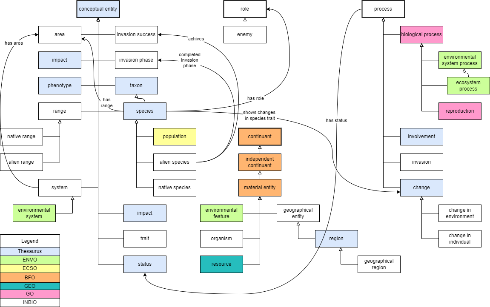

Invasion Biology Ontology
Release 13.07.2022
- This version:
- http://www.semanticweb.org/rs/ontologies/INBIO/1.0
- Latest version:
- http://www.semanticweb.org/rs/ontologies/INBIO
- Previous version:
- None
- Revision:
- 1.0.0
- Authors:
- Alsayed Algergawy, (Friedrich-Schiller-Universität Jena)
- Merle Gänßinger, (Friedrich-Schiller-Universität Jena)
- Tina Heger, (Freie Universität Berlin, Leibniz Institute of Freshwater Ecology and Inland Fisheries (IGB))
- Jonathan Jeschke, (Leibniz Institute of Freshwater Ecology and Inland Fisheries (IGB))
- Birgitta König-Ries, (Friedrich-Schiller-Universität Jena)
- Contributors:
- Ria Stangeh, (Friedrich-Schiller-Universität Jena)
- Publisher:
- Alsayed Algergawy, (Friedrich-Schiller-Universität Jena)
- Imported Ontologies:
- Cerrado (ccon)
- Basic Formal Ontology (BFO)
- Chemical Entities of Biological Interest (CHEBI)
- Geographical Entity Ontology (GEO)
- Gene Ontology (GO)
- NCBI organismal classification (NCBI)
- Ontology for Biomedical Investigations (OBI)
- Phenotype And Trait Ontology (PATO)
- Population and Community Ontology (PCO)
- Relation Ontology (RO)
- Uberon multi-species anatomy ontology (UBERON)
- Dublin Core (DC)
- Web Ontology Language (OWL)
- Resource Description Framework (RDF)
- Extensible Markup Language (XML)
- XML Schema Definition (XSD)
- Friend of a Friend (FOAF)
- Resource Description Framework Schema (RDFS)
- Simple Knowledge Organisation System (SKOS)
- The Extensible Observation Ontology (OBOE)
- License:
-blue.svg)

- Visualization:

- Cite as:
- Retrieved from: https://doi.org/10.5281/zenodo.6826848
- DOI:

- Compatible with:
- None

Cross-reference for Invasion Biology Ontology classes, object properties and data properties back to ToC
This section provides details for each class and property defined by Invasion Biology Ontology.Classes
- absence
- actinopterygii
- advective transport process
- aggregate of contiguous land masses
- aggregate of islands
- air
- algae
- alien range
- alien species
- allocation
- alveolata
- amniota
- amorphous
- amphibia
- analysis subset ontology module
- anatomical entity environment
- anatomical structure
- animal diversity
- animal nutrient
- animal-associated environment
- anthropisation
- anthropogenic disturbance
- anthropogenic ecosystem conversion process
- anthropogenic environment
- anthropogenic environmental process
- anthropogenic geographic feature
- antislim exclusion subset ontology module
- aquatic environment
- aquatic estuarine layer
- aquatic layer
- aquatic natural environment
- archaea
- archelosauria
- archosauria
- area
- area unit
- arthropoda
- atmosphere
- atmospheric process
- atmospheric water vapour
- atmospheric zone
- average annual precipitation
- aves
- bacteria
- base ontology module
- behavioural change
- benefit
- beta diversity
- beta diversity index
- bilateria
- biodiversity
- biological process
- biosphere
- birth rate
- body of water
- boreoeutheria
- bridge ontology module
- catarrhini
- cercozoa
- change
- change in environment
- change in individual
- chlorarachniophyceae
- chlorophyta
- chondrichthyes
- chordata
- clay
- coast
- coelurosauria
- cold environment
- collection of organisms
- color
- community
- community dynamics
- competitive strength
- composition
- composition of soil
- composition of water
- compound property
- conceptual entity
- condensation process
- contiguous island land mass
- contiguous land mass
- continent
- continuant
- craniata <chordata>
- crocodylia
- crustacea
- cryosphere
- cryptophyceae
- curation status specification
- curation subset ontology module
- cycle
- cyclostomata
- data about an ontology part
- data item
- datum label data item label
- db xref
- death rate
- defense
- definition
- denotator type
- deuterostomia
- difference
- dinophyceae
- dinosauria
- dipnomorpha
- dipnotetrapodomorpha
- discoba
- displaced
- disturbance
- disturbed ecosystem
- diversity
- diversity index
- ecdysozoa
- ecological impact
- ecological measure
- ecoregion
- ecosystem
- ecosystem process
- ecosystem property
- ecozone
- ectoparasite
- el++ ontology module
- electromagnetic (em) radiation quality
- elevation
- elongated
- embryophyta
- endolithic environment
- endurance
- enemy
- energy
- enriched soil
- environment associated with a plant part or small plant
- environment associated with an animal part or small animal
- environment associated with an aquatic invertebrate
- environmental condition
- environmental feature
- environmental material
- environmental system
- environmental system determined by a material
- environmental system determined by a quality
- environmental system determined by an organism
- environmental system process
- environmental zone
- erosion
- establishment
- estimate
- estuary
- euarchontoglires
- euglenida
- euglenozoa
- eukaryota
- euteleostomi
- eutheria
- event
- external import external import ontology module
- fire incidence
- frozen soil
- functional trait
- fungi
- gaseous environmental material
- generalist
- generated ontology module
- generation length
- generically dependent continuant
- genetic change
- genetic characteristic
- genetic diversity
- geodetic coordinate measurement datum
- geodetic datum
- geographic area
- geographic feature
- geographical distribution
- geographical entity
- geographical region
- glacial feature
- glaucocystophyceae
- gnathostomata <vertebrate>
- granular
- growth
- growth
- habitat
- haplorrhini
- haptista
- haptophyta
- height
- hexapoda
- high osmolarity environment
- hominidae
- homininae
- hominoidea
- homo
- homo sapiens
- host organism interaction
- housing humidity
- human activity
- humidity
- hydrographic feature
- hydrological condensation process
- hydrological precipitation process
- hydrological process
- hyperoartia
- ice
- impact
- import file import ontology module
- in progress
- increment
- independent continuant
- information content entity
- insecta
- invasion
- invasion establishment phase
- invasion phase
- invasion spread phase
- invasion success
- invasion transport phase
- invasive species
- inverse estuary
- involvement
- island
- lake
- laminar
- land
- land mass
- latitude latitude coordinate measurement datum
- layer
- length
- lepidosauria
- life history trait
- light
- liquid air-water interface layer
- liquid environmental material
- liquid layer
- liquid water
- longevity
- longitude longitude coordinate measurement datum
- lophotrochozoa
- main release ontology module
- mammalia
- mandibulata
- marine environment
- marine environmental zone
- marine layer
- marine pelagic feature
- marine sediment
- mass
- mass liquid flow
- material accumulation process
- material congelation process
- material entity
- material transformation process
- material transport process
- mean annual relative humidity
- mean annual temperature
- measurement datum
- measurement unit label
- metallic material
- micronutrient
- mineral material
- mineral nutrient
- mollusca
- morphological change
- morphological feature
- morphological phenotype
- morphology
- multi-species collection of organisms
- myxini
- native range
- native species
- natural disturbance
- natural environment
- natural lake
- neighborhood
- non-invasive species
- nutrient
- nutrient content
- nutrient salt
- obo basic subset ontology module
- obsolescence reason specification
- ocean
- ontology file ontology module
- ontology module subsetted by expressivity
- ontology module subsetted by owl profile
- ontology slim subset ontology module
- oomycota
- opacity
- opaque
- opisthokonta
- optical quality
- organic material
- organism
- organism characteristic
- origin
- panarthropoda
- pancrustacea
- parasite
- particulate matter
- perimeter
- permafrost
- permeability
- pH
- phenological change
- phenotype
- phenotypic plasticity
- physical object quality
- physical quality
- physiological change
- pielou's evenness index
- pisces
- place
- plane angle measurement unit label
- plant diversity
- plant nutrient
- population
- population density
- population group characteristic
- population of organisms
- population size
- population survival
- porosity
- porosity of soil
- porous
- position
- precipitation process
- predator
- presence
- primary nutrient
- primates
- process
- propagule pressure
- protostomia
- protozoa
- quality
- quality of a substance
- quantity
- radiation
- radiation quality
- range
- reasoned ontology module
- recruitment
- region
- reproduction
- reptilia
- resistance
- resource
- rhizaria
- rhodophyta
- ribbon subset single layer subset ontology module
- rock
- role
- rural area
- saline environment
- saline hydrographic feature
- saline lake
- saline wetland
- sand
- sar
- sarcopterygii
- sauria
- saurischia
- sauropsida
- scalar measurement datum
- scalar value specification
- sea
- sea surface layer
- secondary nutrient
- section
- sediment
- sediment environment
- sediment surface
- sedimentation in a water body
- shannon's diversity index
- shape
- shore
- silt
- simiiformes
- simpson's index
- single-species collection of organisms
- site
- size
- sloped
- sloped downward
- snow
- snowfall
- soil
- soil environment
- solid environmental material
- solid layer
- solid surface layer
- source ontology module editors ontology module
- specialist
- species
- species diversity
- species diversity index
- species evenness
- species evenness index
- species richness
- species richness index
- species trait
- specifically dependent continuant
- spiralia
- status
- stramenopiles
- strength
- streptophyta
- streptophytina
- structure
- structure of soil
- subcontinent
- subcontinental land mass
- subset
- successful
- surface layer
- surface layer of a water body
- symbiosis
- synonym
- synonym type
- system
- Sørensen–dice index
- taxon
- taxon subset species subset ontology module
- taxonomic bridge ontology module
- teleostomi
- template generated ontology module
- terrestrial ecoregion
- terrestrial environmental zone
- terrestrial natural environment
- testudinata
- testudines
- tetrapoda
- theria <mammalia>
- theropoda
- total number
- trace element
- tracheophyta
- trait
- undisturbed ecosystem
- urbanized area
- value specification
- vegetated area
- vertebrata <metazoa>
- viridiplantae
- viruses
- water
- water flow process
- water ice
- water ice layer
- water surface
- water vapour
- wet
- wetland area
- wetland ecosystem
- wetness
- wetness of soil
- width
- zone
absencec back to ToC or Class ToC
IRI: https://github.com/fusion-jena/INBIO#_000075
- has super-classes
- status c
- is disjoint with
- successful c, presence c, in progress c
actinopterygiic back to ToC or Class ToC
IRI: http://purl.obolibrary.org/obo/NCBITaxon_7898
- has super-classes
- euteleostomi c, pisces c
advective transport processc back to ToC or Class ToC
IRI: http://purl.obolibrary.org/obo/ENVO_01001334
- has super-classes
- material transport process c
- has sub-classes
- mass liquid flow c
aggregate of contiguous land massesc back to ToC or Class ToC
IRI: http://purl.obolibrary.org/obo/GEO_000000369
- is equivalent to
- is aggregate of op some land mass c
- has super-classes
- land mass c
- has sub-classes
- aggregate of islands c
aggregate of islandsc back to ToC or Class ToC
IRI: http://purl.obolibrary.org/obo/GEO_000000390
- is equivalent to
- aggregate of contiguous land masses c and (has part op some island c)
- has super-classes
- aggregate of contiguous land masses c
airc back to ToC or Class ToC
IRI: http://purl.obolibrary.org/obo/ENVO_00002005
- has super-classes
- gaseous environmental material c
algaec back to ToC or Class ToC
IRI: https://github.com/fusion-jena/INBIO#_000057
- has super-classes
- taxon c
- has sub-classes
- chlorarachniophyceae c, chlorophyta c, cryptophyceae c, dinophyceae c, euglenida c, glaucocystophyceae c, haptophyta c, rhodophyta c, stramenopiles c
- is disjoint with
- viruses c, bacteria c, archaea c, protozoa c
alien rangec back to ToC or Class ToC
IRI: https://github.com/fusion-jena/INBIO#_000037
- is equivalent to
- range c and (is alien range to op some species c)
- has super-classes
- range c
- is disjoint with
- native range c
alien speciesc back to ToC or Class ToC
IRI: https://github.com/fusion-jena/INBIO#_000053
- is equivalent to
- species c and (completed invasion phase op some invasion transport phase c)
- species c and (has alien range op some area c)
- has super-classes
- species c
- has sub-classes
- invasive species c, non-invasive species c
- is in domain of
- achieves op, completed invasion phase op, has propagule pressure op, is in invasion phase op, shows changes in species trait op
- is in range of
- facilitate op
- is disjoint with
- native species c
allocationc back to ToC or Class ToC
IRI: https://github.com/fusion-jena/INBIO#_000067
- has super-classes
- process c
- is disjoint with
- community dynamics c, involvement c, environmental system process c, human activity c, invasion c
alveolatac back to ToC or Class ToC
IRI: http://purl.obolibrary.org/obo/NCBITaxon_33630
- has super-classes
- sar c
- has sub-classes
- dinophyceae c
amniotac back to ToC or Class ToC
IRI: http://purl.obolibrary.org/obo/NCBITaxon_32524
- has super-classes
- tetrapoda c
- has sub-classes
- mammalia c, sauropsida c
- is disjoint with
- amphibia c
amorphousc back to ToC or Class ToC
IRI: http://purl.obolibrary.org/obo/PATO_0001332
- has super-classes
- morphology c
- is disjoint with
- shape c
analysis subset ontology modulec back to ToC or Class ToC
IRI: http://purl.obolibrary.org/obo/IAO_8000008
- has super-classes
- ontology slim subset ontology module c
anatomical entity environmentc back to ToC or Class ToC
IRI: http://purl.obolibrary.org/obo/ENVO_2100000
- Is deprecated
- true
- has super-classes
- environmental system c
anatomical structurec back to ToC or Class ToC
IRI: http://purl.obolibrary.org/obo/UBERON_0000061
- has super-classes
- morphological feature c
- is disjoint with
- color c
animal diversityc back to ToC or Class ToC
IRI: https://github.com/fusion-jena/INBIO#_000052
- has super-classes
- biodiversity c
- is disjoint with
- plant diversity c, genetic diversity c
animal nutrientc back to ToC or Class ToC
IRI: https://github.com/fusion-jena/INBIO#_000063
- has super-classes
- nutrient c
animal-associated environmentc back to ToC or Class ToC
IRI: http://purl.obolibrary.org/obo/ENVO_01001002
- has super-classes
- environmental system determined by an organism c
- has sub-classes
- environment associated with an aquatic invertebrate c
anthropisationc back to ToC or Class ToC
IRI: http://purl.obolibrary.org/obo/ENVO_01000952
- is equivalent to
- anthropogenic ecosystem conversion process c and (has input op some natural environment c) and (has output op some anthropogenic environment c)
- anthropogenic environmental process c and (has input op some natural environment c) and (has output op some anthropogenic environment c)
- has super-classes
- anthropogenic ecosystem conversion process c, anthropogenic environmental process c
anthropogenic disturbancec back to ToC or Class ToC
IRI: https://github.com/fusion-jena/INBIO#_000092
- is equivalent to
- disturbance c and human activity c and (occurs in op some ecosystem c)
- has super-classes
- disturbance c, human activity c
- is disjoint with
- natural disturbance c
anthropogenic ecosystem conversion processc back to ToC or Class ToC
IRI: http://purl.obolibrary.org/obo/ENVO_01001434
- has super-classes
- anthropogenic environmental process c
- has sub-classes
- anthropisation c
anthropogenic environmentc back to ToC or Class ToC
IRI: http://purl.obolibrary.org/obo/ENVO_01000313
- is equivalent to
- environmental system c and (output of op some human activity c)
- has super-classes
- environmental system c
- is disjoint with
- natural environment c
anthropogenic environmental processc back to ToC or Class ToC
IRI: http://purl.obolibrary.org/obo/ENVO_02500027
- is equivalent to
- environmental system process c and (output of op some human activity c)
- has super-classes
- environmental system process c
- has sub-classes
- anthropisation c, anthropogenic ecosystem conversion process c
anthropogenic geographic featurec back to ToC or Class ToC
IRI: http://purl.obolibrary.org/obo/ENVO_00000002
- is equivalent to
- geographic feature c and (output of op some human activity c)
- has super-classes
- geographic feature c
antislimc back to ToC or Class ToC
exclusion subset ontology modulec back to ToC or Class ToC
IRI: http://purl.obolibrary.org/obo/IAO_8000010
- has super-classes
- ontology slim subset ontology module c
aquatic environmentc back to ToC or Class ToC
IRI: http://purl.obolibrary.org/obo/ENVO_01000317
- has super-classes
- environmental system c, environmental system determined by a material c, environmental system determined by a quality c
aquatic estuarine layerc back to ToC or Class ToC
IRI: http://purl.obolibrary.org/obo/ENVO_01001301
- is equivalent to
- aquatic layer c and (part of op some estuary c)
- has super-classes
- aquatic layer c
aquatic layerc back to ToC or Class ToC
IRI: http://purl.obolibrary.org/obo/ENVO_01000325
- has super-classes
- liquid layer c
- has sub-classes
- aquatic estuarine layer c, marine layer c, water surface c
aquatic natural environmentc back to ToC or Class ToC
IRI: http://purl.obolibrary.org/obo/ENVO_01001227
- is equivalent to
- natural environment c and (part of op some body of water c)
- has super-classes
- natural environment c
- is disjoint with
- terrestrial natural environment c
archelosauriac back to ToC or Class ToC
IRI: http://purl.obolibrary.org/obo/NCBITaxon_1329799
- has super-classes
- sauria c
- has sub-classes
- archosauria c, testudinata c
archosauriac back to ToC or Class ToC
IRI: http://purl.obolibrary.org/obo/NCBITaxon_8492
- has super-classes
- archelosauria c
- has sub-classes
- crocodylia c, dinosauria c
areac back to ToC or Class ToC
IRI: https://github.com/fusion-jena/INBIO#_000026
- has super-classes
- conceptual entity c
- is in domain of
- has amount of closely related species dp, is alien range to op, is native range to op, is range of op
- is in range of
- has alien range op, has area op, has distribution op, has native range op, has range op, is absent op
- is disjoint with
- impact c, phenotype c, benefit c, event c, status c, taxon c, system c, propagule pressure c, invasion phase c, estimate c, trait c, invasion success c
area unitc back to ToC or Class ToC
IRI: http://purl.obolibrary.org/obo/UO_0000047
- has super-classes
- measurement unit label c
arthropodac back to ToC or Class ToC
IRI: http://purl.obolibrary.org/obo/NCBITaxon_6656
- has super-classes
- panarthropoda c
- has sub-classes
- mandibulata c
atmospherec back to ToC or Class ToC
IRI: http://purl.obolibrary.org/obo/ENVO_01000267
- has super-classes
- layer c
- is disjoint with
- surface layer c, solid layer c
atmospheric processc back to ToC or Class ToC
IRI: http://purl.obolibrary.org/obo/ENVO_02500003
- is equivalent to
- environmental system process c and (occurs in op some atmosphere c)
- has super-classes
- environmental system process c
atmospheric water vapourc back to ToC or Class ToC
IRI: http://purl.obolibrary.org/obo/ENVO_01000268
- is equivalent to
- water vapour c and (part of op some atmosphere c)
- has super-classes
- water vapour c
atmospheric zonec back to ToC or Class ToC
IRI: http://purl.obolibrary.org/obo/ENVO_01001299
- is equivalent to
- environmental zone c and (part of op some atmosphere c)
- has super-classes
- environmental zone c
- is disjoint with
- ecoregion c, ecozone c, coast c, terrestrial environmental zone c, marine environmental zone c
average annual precipitationc back to ToC or Class ToC
IRI: http://cerrado.linkeddata.es/ecology/ccon#Precipitation
- has super-classes
- environmental condition c
- is in domain of
- decreases op, increases op
- is disjoint with
- fire incidence c, mean annual temperature c, pH c, humidity c, nutrient content c
avesc back to ToC or Class ToC
IRI: http://purl.obolibrary.org/obo/NCBITaxon_8782
- has super-classes
- coelurosauria c
base ontology modulec back to ToC or Class ToC
IRI: http://purl.obolibrary.org/obo/IAO_8000001
- has super-classes
- ontology file ontology module c
behavioural changec back to ToC or Class ToC
IRI: https://github.com/fusion-jena/INBIO#_000073
- has super-classes
- change in individual c
- is disjoint with
- genetic change c
benefitc back to ToC or Class ToC
IRI: http://ncicb.nci.nih.gov/xml/owl/EVS/Thesaurus.owl#C25387
- has super-classes
- conceptual entity c
- is disjoint with
- impact c, phenotype c, place c, event c, taxon c, origin c, zone c, site c, system c, propagule pressure c, area c, invasion phase c, estimate c, range c, trait c, invasion success c
beta diversityc back to ToC or Class ToC
IRI: https://github.com/fusion-jena/INBIO#_000066
- has super-classes
- biodiversity c
- is disjoint with
- genetic diversity c
beta diversity indexc back to ToC or Class ToC
IRI: https://github.com/fusion-jena/INBIO#_000029
- has super-classes
- diversity index c
bilateriac back to ToC or Class ToC
IRI: http://purl.obolibrary.org/obo/NCBITaxon_33213
- has super-classes
- opisthokonta c
- has sub-classes
- deuterostomia c, protostomia c
- is disjoint with
- fungi c
biodiversityc back to ToC or Class ToC
IRI: http://cerrado.linkeddata.es/ecology/ccon#Biodiversity
- has super-classes
- diversity c
- has sub-classes
- animal diversity c, beta diversity c, genetic diversity c, plant diversity c, species diversity c, species evenness c, species richness c
- is in domain of
- has index op, has value op
- is in range of
- has increased levels of op
biological processc back to ToC or Class ToC
IRI: http://purl.obolibrary.org/obo/GO_0008150
- is equivalent to
- process c and (has participant op some organism c)
- has super-classes
- process c
- has sub-classes
- ecosystem process c, growth c, host organism interaction c, reproduction c
biospherec back to ToC or Class ToC
IRI: http://purl.obolibrary.org/obo/ENVO_01000817
- has super-classes
- environmental system c
birth ratec back to ToC or Class ToC
IRI: https://github.com/fusion-jena/INBIO#_000077
- is equivalent to
- life history trait c and (is natality of op some population c)
- has super-classes
- life history trait c
- is in domain of
- is natality of op
- is in range of
- has natality op
- is disjoint with
- death rate c, longevity c, generation length c
body of waterc back to ToC or Class ToC
IRI: http://purl.obolibrary.org/obo/ENVO_00000063
- is equivalent to
- geographical region c and (has part op some liquid water c)
- has super-classes
- geographical region c
- has sub-classes
- estuary c, lake c, ocean c, sea c
boreoeutheriac back to ToC or Class ToC
IRI: http://purl.obolibrary.org/obo/NCBITaxon_1437010
- has super-classes
- eutheria c
- has sub-classes
- euarchontoglires c
bridge ontology modulec back to ToC or Class ToC
IRI: http://purl.obolibrary.org/obo/IAO_8000004
- has super-classes
- ontology file ontology module c
- has sub-classes
- taxonomic bridge ontology module c
catarrhinic back to ToC or Class ToC
IRI: http://purl.obolibrary.org/obo/NCBITaxon_9526
- has super-classes
- simiiformes c
- has sub-classes
- hominoidea c
cercozoac back to ToC or Class ToC
IRI: http://purl.obolibrary.org/obo/NCBITaxon_136419
- has super-classes
- rhizaria c
- has sub-classes
- chlorarachniophyceae c
changec back to ToC or Class ToC
IRI: http://ncicb.nci.nih.gov/xml/owl/EVS/Thesaurus.owl#C25446
- is equivalent to
- process c and (affects op some conceptual entity c or continuant c)
- has super-classes
- process c
- has sub-classes
- change in environment c, change in individual c
- is in range of
- shows changes in species trait op
change in environmentc back to ToC or Class ToC
IRI: https://github.com/fusion-jena/INBIO#_000020
- is equivalent to
- change c and (affects op some environmental system c)
- has super-classes
- change c
- is disjoint with
- change in individual c
change in individualc back to ToC or Class ToC
IRI: https://github.com/fusion-jena/INBIO#_000047
- is equivalent to
- change c and (affects op some organism c)
- has super-classes
- change c
- has sub-classes
- behavioural change c, genetic change c, morphological change c, phenological change c, physiological change c
- is disjoint with
- change in environment c
chlorophytac back to ToC or Class ToC
IRI: http://purl.obolibrary.org/obo/NCBITaxon_3041
- has super-classes
- algae c, viridiplantae c
chondrichthyesc back to ToC or Class ToC
IRI: http://purl.obolibrary.org/obo/NCBITaxon_7777
- has super-classes
- gnathostomata <vertebrate> c, pisces c
chordatac back to ToC or Class ToC
IRI: http://purl.obolibrary.org/obo/NCBITaxon_7711
- has super-classes
- deuterostomia c
- has sub-classes
- craniata <chordata> c
clayc back to ToC or Class ToC
IRI: http://purl.obolibrary.org/obo/ENVO_00002982
- is equivalent to
- environmental material c and (has quality op some porous c)
- has super-classes
- environmental material c
- is disjoint with
- water c, permafrost c, silt c, sand c, particulate matter c, organic material c, snow c, gaseous environmental material c, liquid environmental material c, metallic material c, ice c
coastc back to ToC or Class ToC
IRI: http://purl.obolibrary.org/obo/ENVO_01000687
- is equivalent to
- environmental zone c and ((overlaps op some land c) and (overlaps op some ocean c or sea c or lake c))
- has super-classes
- environmental zone c
- is disjoint with
- atmospheric zone c
cold environmentc back to ToC or Class ToC
IRI: http://purl.obolibrary.org/obo/ENVO_01000309
- has super-classes
- environmental system c
collection of organismsc back to ToC or Class ToC
IRI: http://purl.obolibrary.org/obo/PCO_0000000
- is equivalent to
- material entity c and (has part op min 2 )
- has super-classes
- material entity c
- has sub-classes
- community c, multi-species collection of organisms c, single-species collection of organisms c
- is disjoint with
- geographic feature c, geographical entity c, organism c, resource c
colorc back to ToC or Class ToC
IRI: http://ncicb.nci.nih.gov/xml/owl/EVS/Thesaurus.owl#C37927
- has super-classes
- morphological feature c
- is disjoint with
- length c, width c, height c, anatomical structure c
communityc back to ToC or Class ToC
IRI: https://github.com/fusion-jena/INBIO#_000046
- is equivalent to
- collection of organisms c and (has part op min 2 species c) and (located in op exactly 1 area c)
- has super-classes
- collection of organisms c
- is disjoint with
- single-species collection of organisms c
community dynamicsc back to ToC or Class ToC
IRI: http://cerrado.linkeddata.es/ecology/ccon#ComunityDynamics
- is equivalent to
- process c and (affects op some population c) and (occurs in op some ecosystem c)
- has super-classes
- process c
- is disjoint with
- environmental system process c, human activity c, invasion c, allocation c
competitive strengthc back to ToC or Class ToC
IRI: https://github.com/fusion-jena/INBIO#_000089
- has super-classes
- strength c
compositionc back to ToC or Class ToC
IRI: http://purl.obolibrary.org/obo/PATO_0000025
- has super-classes
- structure c
- has sub-classes
- composition of soil c, composition of water c, granular c
- is disjoint with
- permeability c, laminar c
composition of soilc back to ToC or Class ToC
IRI: http://purl.obolibrary.org/obo/ENVO_09200008
- is equivalent to
- structure of soil c and composition c
- has super-classes
- composition c, structure of soil c
- is disjoint with
- porosity of soil c
composition of waterc back to ToC or Class ToC
IRI: http://purl.obolibrary.org/obo/ENVO_09200017
- has super-classes
- composition c
compound propertyc back to ToC or Class ToC
IRI: https://github.com/fusion-jena/INBIO#_000083
conceptual entityc back to ToC or Class ToC
IRI: http://ncicb.nci.nih.gov/xml/owl/EVS/Thesaurus.owl#C20181
condensation processc back to ToC or Class ToC
IRI: http://purl.obolibrary.org/obo/ENVO_01000724
- is equivalent to
- material congelation process c and (has input op some gaseous environmental material c) and (has output op some liquid environmental material c)
- has super-classes
- material congelation process c
- has sub-classes
- hydrological condensation process c
contiguous island land massc back to ToC or Class ToC
IRI: http://purl.obolibrary.org/obo/GEO_000000357
- has super-classes
- subcontinental land mass c
contiguous land massc back to ToC or Class ToC
IRI: http://purl.obolibrary.org/obo/GEO_000000335
- has super-classes
- subcontinental land mass c
continentc back to ToC or Class ToC
IRI: https://github.com/fusion-jena/INBIO#_000060
continuantc back to ToC or Class ToC
IRI: http://purl.obolibrary.org/obo/BFO_0000002
- Is defined by
- http://purl.obolibrary.org/obo/bfo.owl
- has sub-classes
- generically dependent continuant c, independent continuant c, specifically dependent continuant c
- is in domain of
- output of op, participates in op
- is in range of
- has output op, has participant op
craniata <chordata>c back to ToC or Class ToC
IRI: http://purl.obolibrary.org/obo/NCBITaxon_89593
- has super-classes
- chordata c
- has sub-classes
- vertebrata <metazoa> c
crocodyliac back to ToC or Class ToC
IRI: http://purl.obolibrary.org/obo/NCBITaxon_1294634
- has super-classes
- archosauria c, reptilia c
crustaceac back to ToC or Class ToC
IRI: http://purl.obolibrary.org/obo/NCBITaxon_6657
- has super-classes
- pancrustacea c
cryospherec back to ToC or Class ToC
IRI: http://purl.obolibrary.org/obo/ENVO_01000818
- has super-classes
- glacial feature c
cryptophyceaec back to ToC or Class ToC
IRI: http://purl.obolibrary.org/obo/NCBITaxon_3027
- has super-classes
- algae c, eukaryota c
- is disjoint with
- haptista c, discoba c, sar c, rhodophyta c, viridiplantae c, opisthokonta c, glaucocystophyceae c
curation status specificationc back to ToC or Class ToC
IRI: http://purl.obolibrary.org/obo/IAO_0000078
- Source
- GROUP:OBI:<http://purl.obolibrary.org/obo/obi>
- OBI_0000266
- Term status
- http://purl.obolibrary.org/obo/IAO_0000125
- has super-classes
- data about an ontology part c
curation subset ontology modulec back to ToC or Class ToC
IRI: http://purl.obolibrary.org/obo/IAO_8000007
- has super-classes
- ontology slim subset ontology module c
cyclec back to ToC or Class ToC
IRI: http://ncicb.nci.nih.gov/xml/owl/EVS/Thesaurus.owl#C25472
- has super-classes
- event c
cyclostomatac back to ToC or Class ToC
IRI: http://purl.obolibrary.org/obo/NCBITaxon_1476529
- has super-classes
- pisces c
- has sub-classes
- hyperoartia c, myxini c
data about an ontology partc back to ToC or Class ToC
IRI: http://purl.obolibrary.org/obo/IAO_0000102
- has super-classes
- data item c
- has sub-classes
- curation status specification c, db xref c, definition c, denotator type c, obsolescence reason specification c, ontology file ontology module c, subset c, synonym c, synonym type c
data itemc back to ToC or Class ToC
IRI: http://purl.obolibrary.org/obo/IAO_0000027
- has super-classes
- information content entity c
- has sub-classes
- data about an ontology part c, measurement datum c
datum labelc back to ToC or Class ToC
data item labelc back to ToC or Class ToC
IRI: http://purl.obolibrary.org/obo/IAO_0000009
- Term status
- http://purl.obolibrary.org/obo/IAO_0000122
- has super-classes
- information content entity c
- has sub-classes
- measurement unit label c
db xrefc back to ToC or Class ToC
IRI: http://www.geneontology.org/formats/oboInOwl#DbXref
- has super-classes
- data about an ontology part c
death ratec back to ToC or Class ToC
IRI: http://cerrado.linkeddata.es/ecology/ccon#Mortality
- is equivalent to
- life history trait c and (is mortality of op some population c)
- has super-classes
- life history trait c
- is in domain of
- is mortality of op
- is in range of
- has mortality op
- is disjoint with
- recruitment c, longevity c, generation length c, birth rate c
defensec back to ToC or Class ToC
IRI: http://ncicb.nci.nih.gov/xml/owl/EVS/Thesaurus.owl#C61556
- has super-classes
- compound property c
- is in domain of
- has decreased effort level by op, has increased effort level by op, is against op, is enhanced by op
- is in range of
- decreases effort in op, enhance op, increases effort in op
definitionc back to ToC or Class ToC
IRI: http://www.geneontology.org/formats/oboInOwl#Definition
- has super-classes
- data about an ontology part c
denotator typec back to ToC or Class ToC
IRI: http://purl.obolibrary.org/obo/IAO_0000409
- Source
- Barry Smith, Werner Ceusters
- Example
-
The Basic Formal Ontology ontology makes a distinction between Universals and defined classes, where the formal are "natural kinds" and the latter arbitrary collections of entities.
- is equivalent to
- { i a o 0000410 , i a o 0000420 , i a o 0000421 }
- has super-classes
- data about an ontology part c
deuterostomiac back to ToC or Class ToC
IRI: http://purl.obolibrary.org/obo/NCBITaxon_33511
- has super-classes
- bilateria c
- has sub-classes
- chordata c
- is disjoint with
- protostomia c
differencec back to ToC or Class ToC
IRI: http://cerrado.linkeddata.es/ecology/ccon#Difference
- has super-classes
- estimate c
dinosauriac back to ToC or Class ToC
IRI: http://purl.obolibrary.org/obo/NCBITaxon_436486
- has super-classes
- archosauria c
- has sub-classes
- saurischia c
dipnomorphac back to ToC or Class ToC
IRI: http://purl.obolibrary.org/obo/NCBITaxon_7878
- has super-classes
- dipnotetrapodomorpha c, pisces c
- is disjoint with
- tetrapoda c
dipnotetrapodomorphac back to ToC or Class ToC
IRI: http://purl.obolibrary.org/obo/NCBITaxon_1338369
- has super-classes
- sarcopterygii c
- has sub-classes
- dipnomorpha c, tetrapoda c
discobac back to ToC or Class ToC
IRI: http://purl.obolibrary.org/obo/NCBITaxon_2611352
- has super-classes
- eukaryota c
- has sub-classes
- euglenozoa c
- is disjoint with
- haptista c, sar c, rhodophyta c, cryptophyceae c, viridiplantae c, opisthokonta c, glaucocystophyceae c
displacedc back to ToC or Class ToC
IRI: http://purl.obolibrary.org/obo/PATO_0002181
- has super-classes
- position c
disturbancec back to ToC or Class ToC
IRI: https://github.com/fusion-jena/INBIO#_000001
- is equivalent to
- ecosystem process c and (affects op some community c or resource c or population c)
- has super-classes
- ecosystem process c
- has sub-classes
- anthropogenic disturbance c, natural disturbance c
disturbed ecosystemc back to ToC or Class ToC
IRI: http://purl.obolibrary.org/obo/ENVO_01000445
- is equivalent to
- ecosystem c and (is affected by op some disturbance c)
- has super-classes
- ecosystem c
- is disjoint with
- undisturbed ecosystem c
diversityc back to ToC or Class ToC
IRI: https://github.com/fusion-jena/INBIO#_000043
- has super-classes
- ecosystem property c
- has sub-classes
- biodiversity c
- is disjoint with
- resistance c
diversity indexc back to ToC or Class ToC
IRI: http://cerrado.linkeddata.es/ecology/ccon#DiversityIndex
- has super-classes
- ecological measure c
- has sub-classes
- beta diversity index c, species diversity index c, species evenness index c, species richness index c
- is in domain of
- has value op
- is in range of
- has index op
ecdysozoac back to ToC or Class ToC
IRI: http://purl.obolibrary.org/obo/NCBITaxon_1206794
- has super-classes
- protostomia c
- has sub-classes
- panarthropoda c
ecological impactc back to ToC or Class ToC
IRI: https://github.com/fusion-jena/INBIO#_000088
- has super-classes
- impact c, invasion success c
- is disjoint with
- establishment c, population survival c
ecological measurec back to ToC or Class ToC
IRI: https://github.com/fusion-jena/INBIO#_000044
- has super-classes
- estimate c
- has sub-classes
- diversity index c
ecoregionc back to ToC or Class ToC
IRI: http://purl.obolibrary.org/obo/ENVO_01000276
- has super-classes
- environmental zone c
- has sub-classes
- terrestrial ecoregion c
- is disjoint with
- atmospheric zone c
ecosystemc back to ToC or Class ToC
IRI: http://purl.obolibrary.org/obo/ENVO_01001110
- has super-classes
- environmental system c
- has sub-classes
- disturbed ecosystem c, environment associated with a plant part or small plant c, environment associated with an animal part or small animal c, environmental system determined by an organism c, undisturbed ecosystem c, wetland ecosystem c
- is in domain of
- has increased levels of op
- is disjoint with
- habitat c
ecosystem processc back to ToC or Class ToC
IRI: http://purl.obolibrary.org/obo/ENVO_01001795
- is equivalent to
- environmental system process c and biological process c and (affects op some ecosystem property c)
- has super-classes
- biological process c, environmental system process c
- has sub-classes
- disturbance c
- is disjoint with
- reproduction c, growth c, host organism interaction c
ecosystem propertyc back to ToC or Class ToC
IRI: https://github.com/fusion-jena/INBIO#_000019
- is equivalent to
- trait c and (characteristic for op some ecosystem c)
- has super-classes
- trait c
- has sub-classes
- diversity c, resistance c
- is disjoint with
- organism characteristic c, population group characteristic c, morphological feature c, genetic characteristic c, functional trait c, species trait c, life history trait c
ecozonec back to ToC or Class ToC
IRI: http://purl.obolibrary.org/obo/ENVO_01000280
- has super-classes
- environmental zone c
- is disjoint with
- atmospheric zone c
ectoparasitec back to ToC or Class ToC
IRI: https://github.com/fusion-jena/INBIO#_000070
- has super-classes
- parasite c
el++ ontology modulec back to ToC or Class ToC
IRI: http://purl.obolibrary.org/obo/IAO_8000020
- has super-classes
- ontology module subsetted by owl profile c
electromagnetic (em) radiation qualityc back to ToC or Class ToC
IRI: http://purl.obolibrary.org/obo/PATO_0001291
- has super-classes
- radiation quality c
- has sub-classes
- optical quality c
elevationc back to ToC or Class ToC
IRI: http://purl.obolibrary.org/obo/PATO_0001687
- has super-classes
- position c
elongatedc back to ToC or Class ToC
IRI: http://purl.obolibrary.org/obo/PATO_0001154
- has super-classes
- shape c
embryophytac back to ToC or Class ToC
IRI: http://purl.obolibrary.org/obo/NCBITaxon_3193
- has super-classes
- streptophytina c
- has sub-classes
- tracheophyta c
endolithic environmentc back to ToC or Class ToC
IRI: http://purl.obolibrary.org/obo/ENVO_01000303
- is equivalent to
- environmental system c and (surrounded by op some rock c)
- has super-classes
- environmental system c
- is disjoint with
- marine environment c
endurancec back to ToC or Class ToC
IRI: http://ncicb.nci.nih.gov/xml/owl/EVS/Thesaurus.owl#C89276
enemyc back to ToC or Class ToC
IRI: https://github.com/fusion-jena/INBIO#_000091
- is equivalent to
- role c and (is enemy of op some species c)
- has super-classes
- role c
- has sub-classes
- generalist c, parasite c, predator c, specialist c
- is in range of
- is against op
energyc back to ToC or Class ToC
IRI: http://ncicb.nci.nih.gov/xml/owl/EVS/Thesaurus.owl#C48058
enriched soilc back to ToC or Class ToC
IRI: http://purl.obolibrary.org/obo/ENVO_00003082
- is equivalent to
- soil c and (has increased levels of op some material entity c)
- has super-classes
- soil c
environment associated with a plant part or small plantc back to ToC or Class ToC
IRI: http://purl.obolibrary.org/obo/ENVO_01001057
- has super-classes
- ecosystem c
- is disjoint with
- wetland ecosystem c
environment associated with an animal part or small animalc back to ToC or Class ToC
IRI: http://purl.obolibrary.org/obo/ENVO_01001055
- has super-classes
- ecosystem c
- is disjoint with
- wetland ecosystem c
environment associated with an aquatic invertebratec back to ToC or Class ToC
IRI: http://purl.obolibrary.org/obo/ENVO_01001176
- has super-classes
- animal-associated environment c
environmental conditionc back to ToC or Class ToC
IRI: http://purl.obolibrary.org/obo/ENVO_01000203
- Term status
- http://purl.obolibrary.org/obo/IAO_0000121
- is equivalent to
- trait c and (characteristic for op some environmental system c)
- has super-classes
- trait c
- has sub-classes
- average annual precipitation c, fire incidence c, humidity c, mean annual temperature c, nutrient content c, pH c
- is disjoint with
- organism characteristic c, population group characteristic c, morphological feature c, genetic characteristic c, functional trait c, species trait c, life history trait c
environmental featurec back to ToC or Class ToC
IRI: http://purl.obolibrary.org/obo/ENVO_00002297
- is equivalent to
- material entity c and (determines op some environmental system c)
- has super-classes
- material entity c
- has sub-classes
- glacial feature c
environmental materialc back to ToC or Class ToC
IRI: http://purl.obolibrary.org/obo/ENVO_00010483
- has super-classes
- resource c
- has sub-classes
- clay c, gaseous environmental material c, ice c, liquid environmental material c, metallic material c, organic material c, particulate matter c, permafrost c, sand c, sediment c, silt c, snow c, soil c, solid environmental material c, water c
environmental systemc back to ToC or Class ToC
IRI: http://purl.obolibrary.org/obo/ENVO_01000254
- has super-classes
- system c
- has sub-classes
- anatomical entity environment c, anthropogenic environment c, aquatic environment c, biosphere c, cold environment c, ecosystem c, endolithic environment c, environmental system determined by a material c, environmental system determined by a quality c, habitat c, marine environment c, natural environment c, saline environment c, sediment environment c, soil environment c
environmental system determined by a materialc back to ToC or Class ToC
IRI: http://purl.obolibrary.org/obo/ENVO_01000998
- Is deprecated
- true
- has super-classes
- environmental system c
- has sub-classes
- aquatic environment c, saline environment c, sediment environment c, soil environment c
environmental system determined by a qualityc back to ToC or Class ToC
IRI: http://purl.obolibrary.org/obo/ENVO_01000997
- Is deprecated
- true
- has super-classes
- environmental system c
- has sub-classes
- aquatic environment c, high osmolarity environment c, soil environment c
environmental system determined by an organismc back to ToC or Class ToC
IRI: http://purl.obolibrary.org/obo/ENVO_01001000
- has super-classes
- ecosystem c
- has sub-classes
- animal-associated environment c
- is disjoint with
- wetland ecosystem c
environmental system processc back to ToC or Class ToC
IRI: http://purl.obolibrary.org/obo/ENVO_02500000
- is equivalent to
- process c and (has participant op some environmental feature c or environmental material c or environmental system c)
- has sub-classes
- anthropogenic environmental process c, atmospheric process c, ecosystem process c, hydrological process c, material accumulation process c, material transformation process c, material transport process c, radiation c
- is disjoint with
- community dynamics c, human activity c, invasion c, allocation c
environmental zonec back to ToC or Class ToC
IRI: http://purl.obolibrary.org/obo/ENVO_01000408
- is equivalent to
- zone c and (part of op some environmental system c)
- has super-classes
- zone c
- has sub-classes
- atmospheric zone c, coast c, ecoregion c, ecozone c, marine environmental zone c, terrestrial environmental zone c
erosionc back to ToC or Class ToC
IRI: http://purl.obolibrary.org/obo/ENVO_01001346
- is equivalent to
- material transport process c and (has participant op some environmental material c)
establishmentc back to ToC or Class ToC
IRI: https://github.com/fusion-jena/INBIO#_000003
- has super-classes
- invasion success c
- is disjoint with
- ecological impact c
estimatec back to ToC or Class ToC
IRI: https://github.com/fusion-jena/INBIO#_000042
- has super-classes
- conceptual entity c
- has sub-classes
- difference c, ecological measure c, increment c, quantity c
- is disjoint with
- impact c, phenotype c, place c, benefit c, event c, status c, taxon c, origin c, zone c, site c, system c, propagule pressure c, area c, invasion phase c, range c, trait c, invasion success c
estuaryc back to ToC or Class ToC
IRI: http://purl.obolibrary.org/obo/ENVO_00000045
- is equivalent to
- body of water c and (adjacent to op some ocean c)
- has super-classes
- body of water c
- has sub-classes
- inverse estuary c
- is disjoint with
- ocean c, sea c, lake c
euarchontogliresc back to ToC or Class ToC
IRI: http://purl.obolibrary.org/obo/NCBITaxon_314146
- has super-classes
- boreoeutheria c
- has sub-classes
- primates c
euglenidac back to ToC or Class ToC
IRI: http://purl.obolibrary.org/obo/NCBITaxon_3035
- has super-classes
- algae c, euglenozoa c
eukaryotac back to ToC or Class ToC
IRI: http://purl.obolibrary.org/obo/NCBITaxon_2759
- has super-classes
- taxon c
- has sub-classes
- cryptophyceae c, discoba c, glaucocystophyceae c, haptista c, opisthokonta c, rhodophyta c, sar c, viridiplantae c
- is disjoint with
- viruses c, bacteria c, archaea c
euteleostomic back to ToC or Class ToC
IRI: http://purl.obolibrary.org/obo/NCBITaxon_117571
- has super-classes
- teleostomi c
- has sub-classes
- actinopterygii c, sarcopterygii c
eutheriac back to ToC or Class ToC
IRI: http://purl.obolibrary.org/obo/NCBITaxon_9347
- has super-classes
- theria <mammalia> c
- has sub-classes
- boreoeutheria c
eventc back to ToC or Class ToC
IRI: http://ncicb.nci.nih.gov/xml/owl/EVS/Thesaurus.owl#C25499
- has super-classes
- conceptual entity c
- has sub-classes
- cycle c
- is disjoint with
- impact c, phenotype c, place c, benefit c, status c, taxon c, origin c, zone c, site c, system c, propagule pressure c, area c, invasion phase c, estimate c, range c, trait c, invasion success c
external importc back to ToC or Class ToC
external import ontology modulec back to ToC or Class ToC
IRI: http://purl.obolibrary.org/obo/IAO_8000011
- has super-classes
- import file import ontology module c
fire incidencec back to ToC or Class ToC
IRI: http://cerrado.linkeddata.es/ecology/ccon#FireIncidence
- has super-classes
- environmental condition c
- is disjoint with
- average annual precipitation c, mean annual temperature c, pH c, humidity c, nutrient content c
frozen soilc back to ToC or Class ToC
IRI: http://purl.obolibrary.org/obo/ENVO_01001526
functional traitc back to ToC or Class ToC
IRI: https://github.com/fusion-jena/INBIO#_000038
- has super-classes
- trait c
- has sub-classes
- endurance c, height c, length c, mass c, perimeter c, width c
- is disjoint with
- population group characteristic c, environmental condition c, genetic characteristic c, ecosystem property c
fungic back to ToC or Class ToC
IRI: http://purl.obolibrary.org/obo/NCBITaxon_4751
- has super-classes
- opisthokonta c
- is disjoint with
- bilateria c
gaseous environmental materialc back to ToC or Class ToC
IRI: http://purl.obolibrary.org/obo/ENVO_01000797
- has super-classes
- environmental material c
- has sub-classes
- air c, water vapour c
- is disjoint with
- permafrost c, soil c, sediment c, clay c, silt c, sand c, particulate matter c, organic material c, snow c, solid environmental material c, liquid environmental material c, ice c
generalistc back to ToC or Class ToC
IRI: https://github.com/fusion-jena/INBIO#_000022
- has super-classes
- enemy c
- is disjoint with
- specialist c
generated ontology modulec back to ToC or Class ToC
IRI: http://purl.obolibrary.org/obo/IAO_8000014
- has super-classes
- ontology file ontology module c
- has sub-classes
- template generated ontology module c
generation lengthc back to ToC or Class ToC
IRI: https://github.com/fusion-jena/INBIO#_000017
- has super-classes
- life history trait c
- is disjoint with
- growth c, death rate c, recruitment c, longevity c, birth rate c
generically dependent continuantc back to ToC or Class ToC
IRI: http://purl.obolibrary.org/obo/BFO_0000031
- Is defined by
- http://purl.obolibrary.org/obo/bfo.owl
- has super-classes
- continuant c
- has sub-classes
- information content entity c
- is disjoint with
- independent continuant c, specifically dependent continuant c, independent continuant c, specifically dependent continuant c
genetic changec back to ToC or Class ToC
IRI: https://github.com/fusion-jena/INBIO#_000013
- is equivalent to
- change in individual c and (affects op some genetic characteristic c)
- has super-classes
- change in individual c
- is disjoint with
- behavioural change c
genetic characteristicc back to ToC or Class ToC
IRI: https://github.com/fusion-jena/INBIO#_000007
- has super-classes
- trait c
- is disjoint with
- environmental condition c, morphological feature c, ecosystem property c, functional trait c, life history trait c
genetic diversityc back to ToC or Class ToC
IRI: https://github.com/fusion-jena/INBIO#_000094
- has super-classes
- biodiversity c
- is disjoint with
- animal diversity c, beta diversity c
geodetic coordinate measurement datumc back to ToC or Class ToC
IRI: http://purl.obolibrary.org/obo/GEO_000000787
- has super-classes
- measurement datum c
- has sub-classes
- latitude latitude coordinate measurement datum c, longitude longitude coordinate measurement datum c
geodetic datumc back to ToC or Class ToC
IRI: http://purl.obolibrary.org/obo/GEO_000000788
- Source
- Wikipedia: https://en.wikipedia.org/wiki/Geodetic_datum Date accessed: 2015-04-13
- has super-classes
- information content entity c
geographic areac back to ToC or Class ToC
IRI: http://ncicb.nci.nih.gov/xml/owl/EVS/Thesaurus.owl#C16632
- has super-classes
- geographical entity c
- has sub-classes
- rural area c, section c, urbanized area c
geographic featurec back to ToC or Class ToC
IRI: http://purl.obolibrary.org/obo/ENVO_00000000
- has super-classes
- material entity c
- has sub-classes
- anthropogenic geographic feature c, hydrographic feature c, layer c
- is disjoint with
- collection of organisms c, organism c, resource c
geographical distributionc back to ToC or Class ToC
IRI: http://cerrado.linkeddata.es/ecology/ccon#GeographicalDistribution
- has super-classes
- range c
geographical entityc back to ToC or Class ToC
IRI: https://github.com/fusion-jena/INBIO#_000034
- has super-classes
- material entity c
- has sub-classes
- geographic area c, region c
- is disjoint with
- collection of organisms c, organism c
geographical regionc back to ToC or Class ToC
IRI: http://purl.obolibrary.org/obo/GEO_000000372
- has super-classes
- region c
- has sub-classes
- body of water c, land mass c
glacial featurec back to ToC or Class ToC
IRI: http://purl.obolibrary.org/obo/ENVO_00000131
- has super-classes
- environmental feature c
- has sub-classes
- cryosphere c
glaucocystophyceaec back to ToC or Class ToC
IRI: http://purl.obolibrary.org/obo/NCBITaxon_38254
- has super-classes
- algae c, eukaryota c
- is disjoint with
- haptista c, discoba c, sar c, rhodophyta c, cryptophyceae c, viridiplantae c, opisthokonta c
gnathostomata <vertebrate>c back to ToC or Class ToC
IRI: http://purl.obolibrary.org/obo/NCBITaxon_7776
- has super-classes
- vertebrata <metazoa> c
- has sub-classes
- chondrichthyes c, teleostomi c
granularc back to ToC or Class ToC
IRI: http://purl.obolibrary.org/obo/PATO_0001759
- has super-classes
- composition c
growthc back to ToC or Class ToC
IRI: http://cerrado.linkeddata.es/ecology/ccon#GrowthRate
- has super-classes
- life history trait c
- is in domain of
- is growth of op
- is in range of
- has growth op
- is disjoint with
- longevity c, generation length c
growthc back to ToC or Class ToC
IRI: http://purl.obolibrary.org/obo/GO_0040007
- is equivalent to
- biological process c and (increases op some size c or mass c)
- has super-classes
- biological process c
- is in domain of
- is enhanced by op
- is in range of
- enhance op
- is disjoint with
- ecosystem process c, reproduction c, host organism interaction c
habitatc back to ToC or Class ToC
IRI: http://purl.obolibrary.org/obo/ENVO_01000739
- has super-classes
- environmental system c
- is in domain of
- is habitat of op
- is in range of
- has habitat op
- is disjoint with
- ecosystem c
haplorrhinic back to ToC or Class ToC
IRI: http://purl.obolibrary.org/obo/NCBITaxon_376913
- has super-classes
- primates c
- has sub-classes
- simiiformes c
haptistac back to ToC or Class ToC
IRI: http://purl.obolibrary.org/obo/NCBITaxon_2608109
- has super-classes
- eukaryota c
- has sub-classes
- haptophyta c
- is disjoint with
- discoba c, sar c, rhodophyta c, cryptophyceae c, viridiplantae c, opisthokonta c, glaucocystophyceae c
heightc back to ToC or Class ToC
IRI: http://ncicb.nci.nih.gov/xml/owl/EVS/Thesaurus.owl#C25347
- has super-classes
- functional trait c, morphological feature c
- is disjoint with
- width c, color c, perimeter c, endurance c, mass c
hexapodac back to ToC or Class ToC
IRI: http://purl.obolibrary.org/obo/NCBITaxon_6960
- has super-classes
- pancrustacea c
- has sub-classes
- insecta c
high osmolarity environmentc back to ToC or Class ToC
IRI: http://purl.obolibrary.org/obo/ENVO_01000314
- Is deprecated
- true
- has super-classes
- environmental system determined by a quality c
- has sub-classes
- saline environment c
hominidaec back to ToC or Class ToC
IRI: http://purl.obolibrary.org/obo/NCBITaxon_9604
- has super-classes
- hominoidea c
- has sub-classes
- homininae c
hominoideac back to ToC or Class ToC
IRI: http://purl.obolibrary.org/obo/NCBITaxon_314295
- has super-classes
- catarrhini c
- has sub-classes
- hominidae c
homoc back to ToC or Class ToC
IRI: http://purl.obolibrary.org/obo/NCBITaxon_9605
- has super-classes
- homininae c
- has sub-classes
- homo sapiens c
homo sapiensc back to ToC or Class ToC
IRI: http://purl.obolibrary.org/obo/NCBITaxon_9606
- has super-classes
- homo c
host organism interactionc back to ToC or Class ToC
IRI: https://github.com/fusion-jena/INBIO#_000006
- has super-classes
- biological process c
- has sub-classes
- symbiosis c
- is disjoint with
- ecosystem process c, reproduction c, growth c
housing humidityc back to ToC or Class ToC
IRI: http://ncicb.nci.nih.gov/xml/owl/EVS/Thesaurus.owl#C90395
- has super-classes
- humidity c
human activityc back to ToC or Class ToC
IRI: https://github.com/fusion-jena/INBIO#_000040
- is equivalent to
- process c and (has participant op some homo sapiens c)
- has super-classes
- process c
- has sub-classes
- anthropogenic disturbance c
- is disjoint with
- community dynamics c, environmental system process c, invasion c, allocation c
humidityc back to ToC or Class ToC
IRI: http://ncicb.nci.nih.gov/xml/owl/EVS/Thesaurus.owl#C88206
- has super-classes
- environmental condition c
- has sub-classes
- housing humidity c, mean annual relative humidity c
- is disjoint with
- fire incidence c, average annual precipitation c, mean annual temperature c, pH c, nutrient content c
hydrographic featurec back to ToC or Class ToC
IRI: http://purl.obolibrary.org/obo/ENVO_00000012
- is equivalent to
- geographic feature c and (adjacent to op some body of water c)
- has super-classes
- geographic feature c
- has sub-classes
- marine pelagic feature c, saline hydrographic feature c, shore c
hydrological condensation processc back to ToC or Class ToC
IRI: http://purl.obolibrary.org/obo/ENVO_01000624
- is equivalent to
- condensation process c and hydrological process c and (has input op some atmospheric water vapour c) and (has output op some liquid water c)
- has super-classes
- condensation process c, hydrological process c
- is disjoint with
- water flow process c
hydrological precipitation processc back to ToC or Class ToC
IRI: http://purl.obolibrary.org/obo/ENVO_01000703
- is equivalent to
- precipitation process c and (has input op some (environmental material c) and (output of op some hydrological condensation process c))
hydrological processc back to ToC or Class ToC
IRI: http://purl.obolibrary.org/obo/ENVO_02500031
- is equivalent to
- environmental system process c and (has participant op some water c or liquid water c or water vapour c or water ice c)
- has super-classes
- environmental system process c
- has sub-classes
- hydrological condensation process c, water flow process c
hyperoartiac back to ToC or Class ToC
IRI: http://purl.obolibrary.org/obo/NCBITaxon_117569
- has super-classes
- cyclostomata c
icec back to ToC or Class ToC
IRI: http://purl.obolibrary.org/obo/ENVO_01001125
- has super-classes
- environmental material c
- has sub-classes
- frozen soil c
- is disjoint with
- clay c, silt c, sand c, particulate matter c, organic material c, gaseous environmental material c, liquid environmental material c, metallic material c
impactc back to ToC or Class ToC
IRI: http://ncicb.nci.nih.gov/xml/owl/EVS/Thesaurus.owl#C122929
- has super-classes
- conceptual entity c
- has sub-classes
- ecological impact c
- is disjoint with
- phenotype c, place c, benefit c, event c, status c, taxon c, origin c, zone c, site c, system c, propagule pressure c, area c, invasion phase c, estimate c, range c, trait c
import filec back to ToC or Class ToC
import ontology modulec back to ToC or Class ToC
IRI: http://purl.obolibrary.org/obo/IAO_8000005
- has super-classes
- ontology slim subset ontology module c
- has sub-classes
- external import external import ontology module c
in progressc back to ToC or Class ToC
IRI: https://github.com/fusion-jena/INBIO#_000078
- has super-classes
- status c
- is disjoint with
- successful c, presence c, absence c
incrementc back to ToC or Class ToC
IRI: http://ncicb.nci.nih.gov/xml/owl/EVS/Thesaurus.owl#C47882
- has super-classes
- estimate c
independent continuantc back to ToC or Class ToC
IRI: http://purl.obolibrary.org/obo/BFO_0000004
- Is defined by
- http://purl.obolibrary.org/obo/bfo.owl
- Example
-
a spatial region
-
an organism
- has super-classes
- continuant c
- has sub-classes
- material entity c
- is in domain of
- adjacent to op, contains op, has quality op, located in op, location of op, occupies spatial region at some time op, surrounded by op, surrounds op
- is in range of
- adjacent to op, contained in op, has spatial occupant at some time op, located in op, location of op, quality of op, role of op, surrounded by op, surrounds op
- is disjoint with
- specifically dependent continuant c, generically dependent continuant c, specifically dependent continuant c, generically dependent continuant c
information content entityc back to ToC or Class ToC
IRI: http://purl.obolibrary.org/obo/IAO_0000030
- has super-classes
- generically dependent continuant c
- has sub-classes
- data item c, datum label data item label c, geodetic datum c, value specification c
insectac back to ToC or Class ToC
IRI: http://purl.obolibrary.org/obo/NCBITaxon_50557
- has super-classes
- hexapoda c
invasionc back to ToC or Class ToC
IRI: https://github.com/fusion-jena/INBIO#_000064
- is equivalent to
- process c and (occurs in op some ecosystem c) and (has participant op some alien species c)
- has super-classes
- process c
- is disjoint with
- community dynamics c, environmental system process c, human activity c, allocation c
invasion establishment phasec back to ToC or Class ToC
IRI: https://github.com/fusion-jena/INBIO#_000069
- has super-classes
- invasion phase c
- is disjoint with
- invasion spread phase c, invasion transport phase c
invasion phasec back to ToC or Class ToC
IRI: https://github.com/fusion-jena/INBIO#_000027
- has super-classes
- conceptual entity c
- has sub-classes
- invasion establishment phase c, invasion spread phase c, invasion transport phase c
- is in range of
- completed invasion phase op, is in invasion phase op
- is disjoint with
- impact c, phenotype c, place c, benefit c, event c, status c, taxon c, origin c, zone c, site c, system c, propagule pressure c, area c, estimate c, range c, trait c, invasion success c
invasion spread phasec back to ToC or Class ToC
IRI: https://github.com/fusion-jena/INBIO#_000024
- has super-classes
- invasion phase c
- is disjoint with
- invasion transport phase c, invasion establishment phase c
invasion successc back to ToC or Class ToC
IRI: https://github.com/fusion-jena/INBIO#_000068
- is equivalent to
- completed invasion phase op some invasion spread phase c or invasion transport phase c or invasion establishment phase c
- has super-classes
- conceptual entity c
- has sub-classes
- ecological impact c, establishment c, population survival c
- is in range of
- achieves op
- is disjoint with
- phenotype c, place c, benefit c, event c, taxon c, origin c, zone c, site c, system c, propagule pressure c, area c, invasion phase c, estimate c, range c, trait c
invasion transport phasec back to ToC or Class ToC
IRI: https://github.com/fusion-jena/INBIO#_000032
- has super-classes
- invasion phase c
- is disjoint with
- invasion spread phase c, invasion establishment phase c
invasive speciesc back to ToC or Class ToC
IRI: https://github.com/fusion-jena/INBIO#_000005
- is equivalent to
- alien species c and (completed invasion phase op some invasion spread phase c) and (completed invasion phase op some invasion establishment phase c)
- has super-classes
- alien species c
- is in domain of
- facilitate op
- is disjoint with
- non-invasive species c
inverse estuaryc back to ToC or Class ToC
IRI: http://purl.obolibrary.org/obo/ENVO_00000228
- has super-classes
- estuary c
involvementc back to ToC or Class ToC
IRI: http://ncicb.nci.nih.gov/xml/owl/EVS/Thesaurus.owl#C25548
- has super-classes
- process c
- is disjoint with
- allocation c
islandc back to ToC or Class ToC
IRI: http://ncicb.nci.nih.gov/xml/owl/EVS/Thesaurus.owl#C48952
lakec back to ToC or Class ToC
IRI: http://purl.obolibrary.org/obo/ENVO_00000020
- has super-classes
- body of water c
- has sub-classes
- natural lake c, saline lake c
- is disjoint with
- ocean c, sea c, estuary c
laminarc back to ToC or Class ToC
IRI: http://purl.obolibrary.org/obo/PATO_0002124
- has super-classes
- structure c
- is disjoint with
- composition c
landc back to ToC or Class ToC
IRI: http://purl.obolibrary.org/obo/ENVO_01001785
- is equivalent to
- solid surface layer c and geographical region c
- has sub-classes
- continent c, island c, shore c, subcontinent c
land massc back to ToC or Class ToC
IRI: http://purl.obolibrary.org/obo/GEO_000000375
- has super-classes
- geographical region c
- has sub-classes
- aggregate of contiguous land masses c, subcontinental land mass c
latitudec back to ToC or Class ToC
latitude coordinate measurement datumc back to ToC or Class ToC
IRI: http://purl.obolibrary.org/obo/OBI_0001620
- Source
- NIAID GSCID-BRC metadata working group
- Term status
- http://purl.obolibrary.org/obo/IAO_0000120
- has super-classes
- geodetic coordinate measurement datum c
layerc back to ToC or Class ToC
IRI: http://purl.obolibrary.org/obo/ENVO_01000281
- has super-classes
- geographic feature c
- has sub-classes
- atmosphere c, solid layer c, surface layer c
lengthc back to ToC or Class ToC
IRI: http://ncicb.nci.nih.gov/xml/owl/EVS/Thesaurus.owl#C25334
- has super-classes
- functional trait c, morphological feature c
- is disjoint with
- color c, perimeter c, endurance c, mass c
life history traitc back to ToC or Class ToC
IRI: https://github.com/fusion-jena/INBIO#_000074
- has super-classes
- trait c
- has sub-classes
- birth rate c, death rate c, generation length c, growth c, longevity c, recruitment c
- is disjoint with
- environmental condition c, genetic characteristic c, ecosystem property c
lightc back to ToC or Class ToC
IRI: https://github.com/fusion-jena/INBIO#_000016
liquid air-water interface layerc back to ToC or Class ToC
IRI: http://purl.obolibrary.org/obo/ENVO_01001309
- is equivalent to
- liquid layer c and (adjacent to op some air c)
- has super-classes
- liquid layer c
liquid environmental materialc back to ToC or Class ToC
IRI: http://purl.obolibrary.org/obo/ENVO_01000815
- has super-classes
- environmental material c
- has sub-classes
- liquid water c
- is disjoint with
- permafrost c, soil c, sediment c, clay c, silt c, sand c, particulate matter c, snow c, gaseous environmental material c, solid environmental material c, ice c
liquid layerc back to ToC or Class ToC
IRI: http://purl.obolibrary.org/obo/ENVO_01001273
- has super-classes
- surface layer c
- has sub-classes
- aquatic layer c, liquid air-water interface layer c
- is disjoint with
- solid surface layer c
liquid waterc back to ToC or Class ToC
IRI: http://purl.obolibrary.org/obo/ENVO_00002006
- is equivalent to
- water c and liquid environmental material c
- has super-classes
- liquid environmental material c, water c
longevityc back to ToC or Class ToC
IRI: http://ncicb.nci.nih.gov/xml/owl/EVS/Thesaurus.owl#C153298
- has super-classes
- life history trait c
- is disjoint with
- growth c, death rate c, recruitment c, generation length c, birth rate c
longitudec back to ToC or Class ToC
longitude coordinate measurement datumc back to ToC or Class ToC
IRI: http://purl.obolibrary.org/obo/OBI_0001621
- Source
- NIAID GSCID-BRC metadata working group
- Term status
- http://purl.obolibrary.org/obo/IAO_0000120
- has super-classes
- geodetic coordinate measurement datum c
main release ontology modulec back to ToC or Class ToC
IRI: http://purl.obolibrary.org/obo/IAO_8000003
- has super-classes
- ontology file ontology module c
mammaliac back to ToC or Class ToC
IRI: http://purl.obolibrary.org/obo/NCBITaxon_40674
- has super-classes
- amniota c
- has sub-classes
- theria <mammalia> c
- is disjoint with
- sauropsida c
mandibulatac back to ToC or Class ToC
IRI: http://purl.obolibrary.org/obo/NCBITaxon_197563
- has super-classes
- arthropoda c
- has sub-classes
- pancrustacea c
marine environmentc back to ToC or Class ToC
IRI: http://purl.obolibrary.org/obo/ENVO_01000320
- has super-classes
- environmental system c
- is disjoint with
- endolithic environment c
marine environmental zonec back to ToC or Class ToC
IRI: http://purl.obolibrary.org/obo/ENVO_01001201
- is equivalent to
- environmental zone c and (part of op some marine environment c)
- has super-classes
- environmental zone c
- is disjoint with
- terrestrial environmental zone c, atmospheric zone c
marine layerc back to ToC or Class ToC
IRI: http://purl.obolibrary.org/obo/ENVO_01000295
- is equivalent to
- aquatic layer c and (part of op some ocean c or sea c)
- has super-classes
- aquatic layer c, marine pelagic feature c
- has sub-classes
- sea surface layer c
marine pelagic featurec back to ToC or Class ToC
IRI: http://purl.obolibrary.org/obo/ENVO_01000044
- has super-classes
- hydrographic feature c
- has sub-classes
- marine layer c
- is disjoint with
- shore c
marine sedimentc back to ToC or Class ToC
IRI: http://purl.obolibrary.org/obo/ENVO_03000033
- is equivalent to
- sediment c and (output of op some sedimentation in a water body c)
- has super-classes
- sediment c
massc back to ToC or Class ToC
IRI: http://purl.obolibrary.org/obo/PATO_0000125
mass liquid flowc back to ToC or Class ToC
IRI: http://purl.obolibrary.org/obo/ENVO_01000981
- is equivalent to
- advective transport process c and (has participant op some liquid environmental material c)
- has super-classes
- advective transport process c
- has sub-classes
- water flow process c
material accumulation processc back to ToC or Class ToC
IRI: http://purl.obolibrary.org/obo/ENVO_03000009
- has super-classes
- environmental system process c
- has sub-classes
- sedimentation in a water body c
material congelation processc back to ToC or Class ToC
IRI: http://purl.obolibrary.org/obo/ENVO_01001510
- has super-classes
- material transformation process c
- has sub-classes
- condensation process c
material entityc back to ToC or Class ToC
IRI: http://purl.obolibrary.org/obo/BFO_0000040
- Is defined by
- http://purl.obolibrary.org/obo/bfo.owl
- Example
-
a hurricane
-
a puff of smoke
-
a sea wave
-
a tornado
- has super-classes
- independent continuant c
- has sub-classes
- collection of organisms c, environmental feature c, geographic feature c, geographical entity c, organism c, resource c
- is in domain of
- capable of op, contained in op, derives from op, derives into op, determines op, has part structure that is capable of op, interacts with op, produced by op, produces op
- is in range of
- contains op, derives from op, derives into op, enabled by op, has input op, interacts with op, occurs in op, produced by op, produces op
material transformation processc back to ToC or Class ToC
IRI: http://purl.obolibrary.org/obo/ENVO_03000043
- is equivalent to
- environmental system process c and (has input op some environmental material c) and (has output op some environmental material c)
- has super-classes
- environmental system process c
- has sub-classes
- material congelation process c
material transport processc back to ToC or Class ToC
IRI: http://purl.obolibrary.org/obo/ENVO_03000010
- is equivalent to
- environmental system process c and (has output op some material entity c and (has quality op some displaced c))
- has super-classes
- environmental system process c
- has sub-classes
- advective transport process c, precipitation process c
mean annual relative humidityc back to ToC or Class ToC
IRI: http://cerrado.linkeddata.es/ecology/ccon#RelativeHumidity
- has super-classes
- humidity c
mean annual temperaturec back to ToC or Class ToC
IRI: http://cerrado.linkeddata.es/ecology/ccon#Temperature
- has super-classes
- environmental condition c
- is disjoint with
- fire incidence c, average annual precipitation c, pH c, humidity c, nutrient content c
measurement datumc back to ToC or Class ToC
IRI: http://purl.obolibrary.org/obo/IAO_0000109
- Source
- OBI_0000305
- group:OBI
- Term status
- http://purl.obolibrary.org/obo/IAO_0000125
- Example
-
Examples of measurement data are the recoding of the weight of a mouse as {40,mass,"grams"}, the recording of an observation of the behavior of the mouse {,process,"agitated"}, the recording of the expression level of a gene as measured through the process of microarray experiment {3.4,luminosity,}.
- has super-classes
- data item c
- has sub-classes
- geodetic coordinate measurement datum c, scalar measurement datum c
measurement unit labelc back to ToC or Class ToC
IRI: http://purl.obolibrary.org/obo/IAO_0000003
- Term status
- http://purl.obolibrary.org/obo/IAO_0000122
- Example
-
Examples of measurement unit labels are liters, inches, weight per volume.
- has super-classes
- datum label data item label c
- has sub-classes
- area unit c, plane angle measurement unit label c
- is in range of
- has measurement unit label op
metallic materialc back to ToC or Class ToC
IRI: http://purl.obolibrary.org/obo/ENVO_01001069
- is equivalent to
- environmental material c and (has quality op some opaque c)
- has super-classes
- environmental material c
- is disjoint with
- water c, permafrost c, soil c, clay c, sand c, particulate matter c, organic material c, snow c, ice c
micronutrientc back to ToC or Class ToC
IRI: https://github.com/fusion-jena/INBIO#_000002
- has super-classes
- nutrient c
mineral materialc back to ToC or Class ToC
IRI: http://purl.obolibrary.org/obo/ENVO_01000256
- has super-classes
- solid environmental material c
- is disjoint with
- rock c, water ice c
mineral nutrientc back to ToC or Class ToC
IRI: https://github.com/fusion-jena/INBIO#_000009
- has super-classes
- nutrient c
molluscac back to ToC or Class ToC
IRI: http://purl.obolibrary.org/obo/NCBITaxon_6447
- has super-classes
- lophotrochozoa c
morphological changec back to ToC or Class ToC
IRI: https://github.com/fusion-jena/INBIO#_000049
- is equivalent to
- change in individual c and (affects op some morphological feature c)
- has super-classes
- change in individual c
morphological featurec back to ToC or Class ToC
IRI: http://purl.obolibrary.org/obo/UBERON_0034768
- has super-classes
- trait c
- has sub-classes
- anatomical structure c, color c, height c, length c, width c
- is disjoint with
- population group characteristic c, environmental condition c, genetic characteristic c, ecosystem property c
morphological phenotypec back to ToC or Class ToC
IRI: https://github.com/fusion-jena/INBIO#_000062
- has super-classes
- phenotype c
morphologyc back to ToC or Class ToC
IRI: http://purl.obolibrary.org/obo/PATO_0000051
- has super-classes
- physical object quality c
- has sub-classes
- amorphous c, shape c, size c, structure c
multi-species collection of organismsc back to ToC or Class ToC
IRI: http://purl.obolibrary.org/obo/PCO_0000029
- is equivalent to
- collection of organisms c and (has part op min 2 species c)
- has super-classes
- collection of organisms c
- is disjoint with
- single-species collection of organisms c
myxinic back to ToC or Class ToC
IRI: http://purl.obolibrary.org/obo/NCBITaxon_117565
- has super-classes
- cyclostomata c
native rangec back to ToC or Class ToC
IRI: https://github.com/fusion-jena/INBIO#_000058
- is equivalent to
- range c and (is native range to op some species c)
- has super-classes
- range c
- is disjoint with
- alien range c
native speciesc back to ToC or Class ToC
IRI: https://github.com/fusion-jena/INBIO#_000051
- has super-classes
- species c
- is disjoint with
- alien species c
natural disturbancec back to ToC or Class ToC
IRI: https://github.com/fusion-jena/INBIO#_000036
- is equivalent to
- disturbance c and (not (human activity c))
- has super-classes
- disturbance c
- is disjoint with
- anthropogenic disturbance c
natural environmentc back to ToC or Class ToC
IRI: http://purl.obolibrary.org/obo/ENVO_01000951
- has super-classes
- environmental system c
- has sub-classes
- aquatic natural environment c, terrestrial natural environment c
- is disjoint with
- anthropogenic environment c
natural lakec back to ToC or Class ToC
IRI: http://purl.obolibrary.org/obo/ENVO_01001022
- has super-classes
- lake c
neighborhoodc back to ToC or Class ToC
IRI: http://ncicb.nci.nih.gov/xml/owl/EVS/Thesaurus.owl#C64203
- has super-classes
- region c
non-invasive speciesc back to ToC or Class ToC
IRI: https://github.com/fusion-jena/INBIO#_000041
- has super-classes
- alien species c
- is disjoint with
- invasive species c
nutrientc back to ToC or Class ToC
IRI: https://github.com/fusion-jena/INBIO#_000012
- has super-classes
- resource c
- has sub-classes
- animal nutrient c, micronutrient c, mineral nutrient c, nutrient salt c, plant nutrient c, primary nutrient c, secondary nutrient c, trace element c
- is disjoint with
- energy c, light c
nutrient contentc back to ToC or Class ToC
IRI: https://github.com/fusion-jena/INBIO#_000065
- has super-classes
- environmental condition c
- is disjoint with
- fire incidence c, average annual precipitation c, mean annual temperature c, pH c, humidity c
nutrient saltc back to ToC or Class ToC
IRI: https://github.com/fusion-jena/INBIO#_000015
- has super-classes
- nutrient c
obo basic subset ontology modulec back to ToC or Class ToC
IRI: http://purl.obolibrary.org/obo/IAO_8000018
- has super-classes
- ontology module subsetted by expressivity c
obsolescence reason specificationc back to ToC or Class ToC
IRI: http://purl.obolibrary.org/obo/IAO_0000225
- Term status
- http://purl.obolibrary.org/obo/IAO_0000125
- is equivalent to
- { i a o 0000103 , i a o 0000226 , i a o 0000227 , i a o 0000228 , i a o 0000229 }
- has super-classes
- data about an ontology part c
oceanc back to ToC or Class ToC
IRI: http://purl.obolibrary.org/obo/ENVO_00000015
- has super-classes
- body of water c
- is disjoint with
- sea c, lake c, estuary c
ontology filec back to ToC or Class ToC
ontology modulec back to ToC or Class ToC
IRI: http://purl.obolibrary.org/obo/IAO_8000000
- has super-classes
- data about an ontology part c
- has sub-classes
- base ontology module c, bridge ontology module c, generated ontology module c, main release ontology module c, ontology slim subset ontology module c, reasoned ontology module c, source ontology module editors ontology module c
ontology module subsetted by expressivityc back to ToC or Class ToC
IRI: http://purl.obolibrary.org/obo/IAO_8000017
- has super-classes
- ontology slim subset ontology module c
- has sub-classes
- obo basic subset ontology module c, ontology module subsetted by owl profile c
ontology module subsetted by owl profilec back to ToC or Class ToC
IRI: http://purl.obolibrary.org/obo/IAO_8000019
- has super-classes
- ontology module subsetted by expressivity c
- has sub-classes
- el++ ontology module c
ontology slimc back to ToC or Class ToC
subset ontology modulec back to ToC or Class ToC
IRI: http://purl.obolibrary.org/obo/IAO_8000006
- has super-classes
- ontology file ontology module c
- has sub-classes
- analysis subset ontology module c, antislim exclusion subset ontology module c, curation subset ontology module c, import file import ontology module c, ontology module subsetted by expressivity c, ribbon subset single layer subset ontology module c, taxon subset species subset ontology module c
oomycotac back to ToC or Class ToC
IRI: http://purl.obolibrary.org/obo/NCBITaxon_4762
- has super-classes
- stramenopiles c
opacityc back to ToC or Class ToC
IRI: http://purl.obolibrary.org/obo/PATO_0000957
- has super-classes
- optical quality c
- has sub-classes
- opaque c
opaquec back to ToC or Class ToC
IRI: http://purl.obolibrary.org/obo/PATO_0000963
- has super-classes
- opacity c
opisthokontac back to ToC or Class ToC
IRI: http://purl.obolibrary.org/obo/NCBITaxon_33154
- has super-classes
- eukaryota c
- has sub-classes
- bilateria c, fungi c
- is disjoint with
- haptista c, discoba c, sar c, rhodophyta c, cryptophyceae c, viridiplantae c, glaucocystophyceae c
optical qualityc back to ToC or Class ToC
IRI: http://purl.obolibrary.org/obo/PATO_0001300
- has super-classes
- electromagnetic (em) radiation quality c
- has sub-classes
- opacity c
organic materialc back to ToC or Class ToC
IRI: http://purl.obolibrary.org/obo/ENVO_01000155
- has super-classes
- environmental material c
- is disjoint with
- water c, permafrost c, clay c, silt c, sand c, particulate matter c, snow c, gaseous environmental material c, metallic material c, ice c
organismc back to ToC or Class ToC
IRI: https://github.com/fusion-jena/INBIO#_000054
- is equivalent to
- viruses c or bacteria c or archaea c or eukaryota c
- has super-classes
- material entity c
- is disjoint with
- geographic feature c, collection of organisms c, geographical entity c
organism characteristicc back to ToC or Class ToC
IRI: http://ncicb.nci.nih.gov/xml/owl/EVS/Thesaurus.owl#C171083
- is equivalent to
- trait c and (characteristic for op some organism c)
- has super-classes
- trait c
- has sub-classes
- phenotypic plasticity c
- is disjoint with
- population group characteristic c, environmental condition c, ecosystem property c
originc back to ToC or Class ToC
IRI: http://ncicb.nci.nih.gov/xml/owl/EVS/Thesaurus.owl#C42703
- has super-classes
- conceptual entity c
- is disjoint with
- impact c, phenotype c, benefit c, event c, status c, taxon c, zone c, propagule pressure c, invasion phase c, estimate c, invasion success c
panarthropodac back to ToC or Class ToC
IRI: http://purl.obolibrary.org/obo/NCBITaxon_88770
- has super-classes
- ecdysozoa c
- has sub-classes
- arthropoda c
pancrustaceac back to ToC or Class ToC
IRI: http://purl.obolibrary.org/obo/NCBITaxon_197562
- has super-classes
- mandibulata c
- has sub-classes
- crustacea c, hexapoda c
parasitec back to ToC or Class ToC
IRI: https://github.com/fusion-jena/INBIO#_000018
- has super-classes
- enemy c
- has sub-classes
- ectoparasite c
particulate matterc back to ToC or Class ToC
IRI: http://purl.obolibrary.org/obo/ENVO_01000060
- is equivalent to
- environmental material c and (surrounded by op some gaseous environmental material c or liquid environmental material c)
- has super-classes
- environmental material c
- is disjoint with
- permafrost c, soil c, clay c, silt c, sand c, organic material c, snow c, gaseous environmental material c, solid environmental material c, liquid environmental material c, metallic material c, ice c
perimeterc back to ToC or Class ToC
IRI: http://ncicb.nci.nih.gov/xml/owl/EVS/Thesaurus.owl#C71612
permafrostc back to ToC or Class ToC
IRI: http://purl.obolibrary.org/obo/ENVO_00000134
- has super-classes
- environmental material c
- is disjoint with
- water c, sediment c, clay c, silt c, sand c, particulate matter c, organic material c, snow c, gaseous environmental material c, liquid environmental material c, metallic material c
permeabilityc back to ToC or Class ToC
IRI: http://purl.obolibrary.org/obo/PATO_0000970
- has super-classes
- structure c
- has sub-classes
- porosity c
- is disjoint with
- composition c
pHc back to ToC or Class ToC
IRI: http://ncicb.nci.nih.gov/xml/owl/EVS/Thesaurus.owl#C45997
- has super-classes
- environmental condition c
- is disjoint with
- fire incidence c, average annual precipitation c, mean annual temperature c, humidity c, nutrient content c
phenological changec back to ToC or Class ToC
IRI: https://github.com/fusion-jena/INBIO#_000035
- has super-classes
- change in individual c
phenotypec back to ToC or Class ToC
IRI: http://ncicb.nci.nih.gov/xml/owl/EVS/Thesaurus.owl#C16977
- has super-classes
- conceptual entity c
- has sub-classes
- morphological phenotype c
- is disjoint with
- impact c, place c, benefit c, event c, status c, taxon c, origin c, zone c, site c, system c, propagule pressure c, area c, invasion phase c, estimate c, range c, trait c, invasion success c
phenotypic plasticityc back to ToC or Class ToC
IRI: https://github.com/fusion-jena/INBIO#_000090
- has super-classes
- organism characteristic c
- is in domain of
- has value op
- is in range of
- has increased levels of op
physical object qualityc back to ToC or Class ToC
IRI: http://purl.obolibrary.org/obo/PATO_0001241
- has super-classes
- quality c
- has sub-classes
- morphology c, physical quality c
physical qualityc back to ToC or Class ToC
IRI: http://purl.obolibrary.org/obo/PATO_0001018
- has super-classes
- physical object quality c
- has sub-classes
- position c, quality of a substance c, radiation quality c, wetness c
physiological changec back to ToC or Class ToC
IRI: https://github.com/fusion-jena/INBIO#_000085
- has super-classes
- change in individual c
pielou's evenness indexc back to ToC or Class ToC
IRI: http://cerrado.linkeddata.es/ecology/ccon#PielousEvennessIndex
- has super-classes
- species evenness index c
piscesc back to ToC or Class ToC
IRI: https://github.com/fusion-jena/INBIO#_000071
- has super-classes
- vertebrata <metazoa> c
- has sub-classes
- actinopterygii c, chondrichthyes c, cyclostomata c, dipnomorpha c
placec back to ToC or Class ToC
IRI: http://ncicb.nci.nih.gov/xml/owl/EVS/Thesaurus.owl#C25319
- has super-classes
- conceptual entity c
- is disjoint with
- impact c, phenotype c, benefit c, event c, status c, taxon c, system c, propagule pressure c, invasion phase c, estimate c, trait c, invasion success c
plane angle measurement unit labelc back to ToC or Class ToC
IRI: http://purl.obolibrary.org/obo/GEO_000000789
- has super-classes
- measurement unit label c
plant diversityc back to ToC or Class ToC
IRI: https://github.com/fusion-jena/INBIO#_000080
- has super-classes
- biodiversity c
- is disjoint with
- animal diversity c
plant nutrientc back to ToC or Class ToC
IRI: https://github.com/fusion-jena/INBIO#_000061
- has super-classes
- nutrient c
populationc back to ToC or Class ToC
IRI: https://github.com/fusion-jena/INBIO#_000093
- has super-classes
- species c
- is in domain of
- has growth op, has mortality op, has natality op, has number of individuals op, has recruitment op, interacts with op
- is in range of
- interacts with op, is growth of op, is mortality of op, is natality of op, is recruitment of op
population densityc back to ToC or Class ToC
IRI: https://github.com/fusion-jena/INBIO#_000082
- has super-classes
- population group characteristic c
- is disjoint with
- population size c
population group characteristicc back to ToC or Class ToC
IRI: http://ncicb.nci.nih.gov/xml/owl/EVS/Thesaurus.owl#C171088
- is equivalent to
- trait c and (characteristic for op some population c)
- has super-classes
- trait c
- has sub-classes
- population density c, population size c
- is disjoint with
- organism characteristic c, environmental condition c, morphological feature c, ecosystem property c, functional trait c, species trait c
population of organismsc back to ToC or Class ToC
IRI: http://purl.obolibrary.org/obo/PCO_0000001
- is equivalent to
- single-species collection of organisms c and (has area op exactly 1 area c)
population sizec back to ToC or Class ToC
IRI: https://github.com/fusion-jena/INBIO#_000004
- has super-classes
- population group characteristic c
- is disjoint with
- population density c
population survivalc back to ToC or Class ToC
IRI: https://github.com/fusion-jena/INBIO#_000076
- has super-classes
- invasion success c
- is disjoint with
- ecological impact c
porosityc back to ToC or Class ToC
IRI: http://purl.obolibrary.org/obo/PATO_0000973
- has super-classes
- permeability c
- has sub-classes
- porosity of soil c, porous c
porosity of soilc back to ToC or Class ToC
IRI: http://purl.obolibrary.org/obo/ENVO_09200004
- is equivalent to
- structure of soil c and porosity c
- has super-classes
- porosity c, structure of soil c
- is disjoint with
- composition of soil c
porousc back to ToC or Class ToC
IRI: http://purl.obolibrary.org/obo/PATO_0000984
- has super-classes
- porosity c
positionc back to ToC or Class ToC
IRI: http://purl.obolibrary.org/obo/PATO_0000140
- has super-classes
- physical quality c
- has sub-classes
- displaced c, elevation c
- is disjoint with
- radiation quality c, wetness c, quality of a substance c
precipitation processc back to ToC or Class ToC
IRI: http://purl.obolibrary.org/obo/ENVO_01000875
- has super-classes
- material transport process c
predatorc back to ToC or Class ToC
IRI: https://github.com/fusion-jena/INBIO#_000008
- has super-classes
- enemy c
presencec back to ToC or Class ToC
IRI: https://github.com/fusion-jena/INBIO#_000031
- has super-classes
- status c
- is disjoint with
- successful c, absence c, in progress c
primary nutrientc back to ToC or Class ToC
IRI: https://github.com/fusion-jena/INBIO#_000072
- has super-classes
- nutrient c
primatesc back to ToC or Class ToC
IRI: http://purl.obolibrary.org/obo/NCBITaxon_9443
- has super-classes
- euarchontoglires c
- has sub-classes
- haplorrhini c
processc back to ToC or Class ToC
IRI: https://github.com/fusion-jena/INBIO#_000025
- has sub-classes
- allocation c, biological process c, change c, community dynamics c, human activity c, invasion c, involvement c
- is in domain of
- enabled by op, has input op, has output op, has participant op, has status op, occurs in op
- is in range of
- capable of op, is status of op, output of op, participates in op
- is disjoint with
- role c
propagule pressurec back to ToC or Class ToC
IRI: https://github.com/fusion-jena/INBIO#_000011
- has super-classes
- conceptual entity c
- is in domain of
- has value op
- is in range of
- has propagule pressure op
- is disjoint with
- impact c, phenotype c, place c, benefit c, event c, status c, taxon c, origin c, zone c, site c, system c, area c, invasion phase c, estimate c, range c, trait c, invasion success c
protostomiac back to ToC or Class ToC
IRI: http://purl.obolibrary.org/obo/NCBITaxon_33317
- has super-classes
- bilateria c
- has sub-classes
- ecdysozoa c, spiralia c
- is disjoint with
- deuterostomia c
qualityc back to ToC or Class ToC
IRI: http://purl.obolibrary.org/obo/PATO_0000001
- has super-classes
- specifically dependent continuant c
- has sub-classes
- physical object quality c
- is in domain of
- quality of op
- is in range of
- has quality op
quality of a substancec back to ToC or Class ToC
IRI: http://purl.obolibrary.org/obo/PATO_0002198
- has super-classes
- physical quality c
- is disjoint with
- position c
quantityc back to ToC or Class ToC
IRI: http://ncicb.nci.nih.gov/xml/owl/EVS/Thesaurus.owl#C25256
- has super-classes
- estimate c
- has sub-classes
- total number c
radiationc back to ToC or Class ToC
IRI: http://purl.obolibrary.org/obo/ENVO_01001023
- has super-classes
- environmental system process c
radiation qualityc back to ToC or Class ToC
IRI: http://purl.obolibrary.org/obo/PATO_0001739
- has super-classes
- physical quality c
- has sub-classes
- electromagnetic (em) radiation quality c
- is disjoint with
- position c, wetness c
rangec back to ToC or Class ToC
IRI: https://github.com/fusion-jena/INBIO#_000045
- has super-classes
- conceptual entity c
- has sub-classes
- alien range c, geographical distribution c, native range c
- is disjoint with
- impact c, phenotype c, benefit c, event c, status c, taxon c, system c, propagule pressure c, invasion phase c, estimate c, trait c, invasion success c
reasoned ontology modulec back to ToC or Class ToC
IRI: http://purl.obolibrary.org/obo/IAO_8000013
- has super-classes
- ontology file ontology module c
recruitmentc back to ToC or Class ToC
IRI: http://cerrado.linkeddata.es/ecology/ccon#Recruitment
- has super-classes
- life history trait c
- is in domain of
- is recruitment of op
- is in range of
- has recruitment op
- is disjoint with
- death rate c, longevity c, generation length c
regionc back to ToC or Class ToC
IRI: http://ncicb.nci.nih.gov/xml/owl/EVS/Thesaurus.owl#C41129
- has super-classes
- geographical entity c
- has sub-classes
- geographical region c, neighborhood c
- is in domain of
- has spatial occupant at some time op
- is in range of
- occupies spatial region at some time op
reproductionc back to ToC or Class ToC
IRI: http://purl.obolibrary.org/obo/GO_0000003
- is equivalent to
- biological process c and (affects op some population size c) and (has output op some organism c)
- has super-classes
- biological process c
- is in domain of
- is enhanced by op
- is in range of
- enhance op
- is disjoint with
- ecosystem process c, growth c, host organism interaction c
reptiliac back to ToC or Class ToC
IRI: https://github.com/fusion-jena/INBIO#_000048
- has super-classes
- vertebrata <metazoa> c
- has sub-classes
- crocodylia c, lepidosauria c, testudines c
resistancec back to ToC or Class ToC
IRI: https://github.com/fusion-jena/INBIO#_000021
- has super-classes
- ecosystem property c
- is disjoint with
- diversity c
resourcec back to ToC or Class ToC
IRI: https://github.com/fusion-jena/INBIO#_000079
- has super-classes
- material entity c
- has sub-classes
- energy c, environmental material c, light c, nutrient c
- is in domain of
- enhance op
- is in range of
- allocates op, is enhanced by op
- is disjoint with
- geographic feature c, collection of organisms c
rhodophytac back to ToC or Class ToC
IRI: http://purl.obolibrary.org/obo/NCBITaxon_2763
- has super-classes
- algae c, eukaryota c
- is disjoint with
- haptista c, discoba c, sar c, cryptophyceae c, viridiplantae c, opisthokonta c, glaucocystophyceae c
ribbon subsetc back to ToC or Class ToC
single layer subset ontology modulec back to ToC or Class ToC
IRI: http://purl.obolibrary.org/obo/IAO_8000009
- has super-classes
- ontology slim subset ontology module c
rockc back to ToC or Class ToC
IRI: http://purl.obolibrary.org/obo/ENVO_00001995
- has super-classes
- solid environmental material c
- is disjoint with
- mineral material c, water ice c
rolec back to ToC or Class ToC
IRI: https://github.com/fusion-jena/INBIO#_000023
rural areac back to ToC or Class ToC
IRI: http://ncicb.nci.nih.gov/xml/owl/EVS/Thesaurus.owl#C178430
- has super-classes
- geographic area c
- is disjoint with
- urbanized area c
saline environmentc back to ToC or Class ToC
IRI: http://purl.obolibrary.org/obo/ENVO_01001040
- has super-classes
- environmental system c, environmental system determined by a material c, high osmolarity environment c
saline hydrographic featurec back to ToC or Class ToC
IRI: http://purl.obolibrary.org/obo/ENVO_00000017
- has super-classes
- hydrographic feature c
saline lakec back to ToC or Class ToC
IRI: http://purl.obolibrary.org/obo/ENVO_00000019
- has super-classes
- lake c
saline wetlandc back to ToC or Class ToC
IRI: http://purl.obolibrary.org/obo/ENVO_00000240
- has super-classes
- wetland area c
sandc back to ToC or Class ToC
IRI: http://purl.obolibrary.org/obo/ENVO_01000017
- has super-classes
- environmental material c
- is disjoint with
- water c, permafrost c, clay c, silt c, particulate matter c, organic material c, snow c, gaseous environmental material c, liquid environmental material c, metallic material c, ice c
sarc back to ToC or Class ToC
IRI: http://purl.obolibrary.org/obo/NCBITaxon_2698737
- has super-classes
- eukaryota c
- has sub-classes
- alveolata c, rhizaria c, stramenopiles c
- is disjoint with
- haptista c, discoba c, rhodophyta c, cryptophyceae c, viridiplantae c, opisthokonta c, glaucocystophyceae c
sarcopterygiic back to ToC or Class ToC
IRI: http://purl.obolibrary.org/obo/NCBITaxon_8287
- has super-classes
- euteleostomi c
- has sub-classes
- dipnotetrapodomorpha c
sauriac back to ToC or Class ToC
IRI: http://purl.obolibrary.org/obo/NCBITaxon_32561
- has super-classes
- sauropsida c
- has sub-classes
- archelosauria c, lepidosauria c
saurischiac back to ToC or Class ToC
IRI: http://purl.obolibrary.org/obo/NCBITaxon_436489
- has super-classes
- dinosauria c
- has sub-classes
- theropoda c
scalar measurement datumc back to ToC or Class ToC
IRI: http://purl.obolibrary.org/obo/IAO_0000032
- Term status
- http://purl.obolibrary.org/obo/IAO_0000120
- Example
-
10 feet. 3 ml.
- has super-classes
- measurement datum c
scalar value specificationc back to ToC or Class ToC
IRI: http://purl.obolibrary.org/obo/OBI_0001931
- Term status
- http://purl.obolibrary.org/obo/IAO_0000123
- has super-classes
- value specification c
seac back to ToC or Class ToC
IRI: http://purl.obolibrary.org/obo/ENVO_00000016
- has super-classes
- body of water c
- is disjoint with
- ocean c, lake c, estuary c
sea surface layerc back to ToC or Class ToC
IRI: http://purl.obolibrary.org/obo/ENVO_01001581
- is equivalent to
- surface layer of a water body c and (part of op some ocean c or sea c)
- has super-classes
- marine layer c, surface layer of a water body c
secondary nutrientc back to ToC or Class ToC
IRI: https://github.com/fusion-jena/INBIO#_000028
- has super-classes
- nutrient c
sectionc back to ToC or Class ToC
IRI: http://ncicb.nci.nih.gov/xml/owl/EVS/Thesaurus.owl#C48956
- has super-classes
- geographic area c
sedimentc back to ToC or Class ToC
IRI: http://purl.obolibrary.org/obo/ENVO_00002007
- has super-classes
- environmental material c
- has sub-classes
- marine sediment c
- is disjoint with
- water c, permafrost c, snow c, gaseous environmental material c, liquid environmental material c
sediment environmentc back to ToC or Class ToC
IRI: http://purl.obolibrary.org/obo/ENVO_01001048
- has super-classes
- environmental system c, environmental system determined by a material c
sediment surfacec back to ToC or Class ToC
IRI: http://purl.obolibrary.org/obo/ENVO_01001192
- is equivalent to
- surface layer c and (part of op some sediment c)
- has super-classes
sedimentation in a water bodyc back to ToC or Class ToC
IRI: http://purl.obolibrary.org/obo/ENVO_03000036
- is equivalent to
- material accumulation process c and (has part op some precipitation process c) and (occurs in op some body of water c) and (has participant op some particulate matter c) and (ends op some material transport process c)
- has super-classes
- material accumulation process c
shannon's diversity indexc back to ToC or Class ToC
IRI: http://cerrado.linkeddata.es/ecology/ccon#shannonsDiversityIndex
- has super-classes
- species diversity index c
shapec back to ToC or Class ToC
IRI: http://purl.obolibrary.org/obo/PATO_0000052
- has super-classes
- morphology c
- has sub-classes
- elongated c, sloped c
- is disjoint with
- amorphous c
shorec back to ToC or Class ToC
IRI: http://purl.obolibrary.org/obo/ENVO_00000304
- is equivalent to
- land c and (adjacent to op some body of water c)
- has super-classes
- hydrographic feature c, land c
- is disjoint with
- marine pelagic feature c
siltc back to ToC or Class ToC
IRI: http://purl.obolibrary.org/obo/ENVO_01000016
- has super-classes
- environmental material c
- is disjoint with
- water c, permafrost c, clay c, sand c, particulate matter c, organic material c, snow c, gaseous environmental material c, liquid environmental material c, ice c
simiiformesc back to ToC or Class ToC
IRI: http://purl.obolibrary.org/obo/NCBITaxon_314293
- has super-classes
- haplorrhini c
- has sub-classes
- catarrhini c
simpson's indexc back to ToC or Class ToC
IRI: http://cerrado.linkeddata.es/ecology/ccon#SimpsonsIndex
- has super-classes
- species diversity index c
single-species collection of organismsc back to ToC or Class ToC
IRI: http://purl.obolibrary.org/obo/PCO_0000018
- is equivalent to
- collection of organisms c and (has part op exactly 1 species c)
- has super-classes
- collection of organisms c
- is disjoint with
- multi-species collection of organisms c, community c
sitec back to ToC or Class ToC
IRI: http://purl.obolibrary.org/obo/BFO_0000029
- has super-classes
- conceptual entity c
- is disjoint with
- impact c, phenotype c, benefit c, event c, status c, taxon c, system c, propagule pressure c, invasion phase c, estimate c, trait c, invasion success c
sizec back to ToC or Class ToC
IRI: http://purl.obolibrary.org/obo/PATO_0000117
- has super-classes
- morphology c
- is disjoint with
- structure c
slopedc back to ToC or Class ToC
IRI: http://purl.obolibrary.org/obo/PATO_0001481
- has super-classes
- shape c
- has sub-classes
- sloped downward c
sloped downwardc back to ToC or Class ToC
IRI: http://purl.obolibrary.org/obo/PATO_0002143
- has super-classes
- sloped c
snowc back to ToC or Class ToC
IRI: http://purl.obolibrary.org/obo/ENVO_01000406
- is equivalent to
- environmental material c and (output of op some snowfall c)
- has super-classes
- environmental material c
- is disjoint with
- permafrost c, soil c, sediment c, clay c, silt c, sand c, particulate matter c, organic material c, gaseous environmental material c, liquid environmental material c, metallic material c
snowfallc back to ToC or Class ToC
IRI: http://purl.obolibrary.org/obo/ENVO_01000895
- is equivalent to
- hydrological precipitation process c and (has participant op some snow c)
soilc back to ToC or Class ToC
IRI: http://purl.obolibrary.org/obo/ENVO_00001998
- has super-classes
- environmental material c
- has sub-classes
- enriched soil c, frozen soil c
- is disjoint with
- water c, particulate matter c, snow c, gaseous environmental material c, liquid environmental material c, metallic material c
soil environmentc back to ToC or Class ToC
IRI: http://purl.obolibrary.org/obo/ENVO_01001044
- has super-classes
- environmental system c, environmental system determined by a material c, environmental system determined by a quality c
solid environmental materialc back to ToC or Class ToC
IRI: http://purl.obolibrary.org/obo/ENVO_01000814
- has super-classes
- environmental material c
- has sub-classes
- mineral material c, rock c, water ice c
- is disjoint with
- particulate matter c, gaseous environmental material c, liquid environmental material c
solid layerc back to ToC or Class ToC
IRI: http://purl.obolibrary.org/obo/ENVO_01001275
- has super-classes
- layer c
- is disjoint with
- atmosphere c
solid surface layerc back to ToC or Class ToC
IRI: http://purl.obolibrary.org/obo/ENVO_01001311
- has super-classes
- surface layer c
- is disjoint with
- liquid layer c
source ontology modulec back to ToC or Class ToC
editors ontology modulec back to ToC or Class ToC
IRI: http://purl.obolibrary.org/obo/IAO_8000002
- has super-classes
- ontology file ontology module c
specialistc back to ToC or Class ToC
IRI: https://github.com/fusion-jena/INBIO#_000055
- has super-classes
- enemy c
- is disjoint with
- generalist c
speciesc back to ToC or Class ToC
IRI: http://ncicb.nci.nih.gov/xml/owl/EVS/Thesaurus.owl#C45293
- has super-classes
- taxon c
- has sub-classes
- alien species c, native species c, population c
- is in domain of
- allocates op, decreases effort in op, has alien range op, has distribution op, has habitat op, has increased levels of op, has invasion success likelihood dp, has native range op, has range op, has role op, has specific name dp, increases effort in op, interacts with op, is absent op, is closely related to op, is enemy of op, is prey of op, is similar to op, spatially coextensive with op
- is in range of
- has decreased effort level by op, has increased effort level by op, interacts with op, is alien range to op, is closely related to op, is enemy of op, is habitat of op, is native range to op, is prey of op, is range of op, is similar to op, spatially coextensive with op
species diversityc back to ToC or Class ToC
IRI: https://github.com/fusion-jena/INBIO#_000010
- has super-classes
- biodiversity c
species diversity indexc back to ToC or Class ToC
IRI: https://github.com/fusion-jena/INBIO#_000030
- has super-classes
- diversity index c
- has sub-classes
- Sørensen–dice index c, shannon's diversity index c, simpson's index c
species evennessc back to ToC or Class ToC
IRI: http://cerrado.linkeddata.es/ecology/ccon#SpeciesEvenness
- has super-classes
- biodiversity c
- is disjoint with
- species richness c
species evenness indexc back to ToC or Class ToC
IRI: https://github.com/fusion-jena/INBIO#_000039
- has super-classes
- diversity index c
- has sub-classes
- pielou's evenness index c
species richnessc back to ToC or Class ToC
IRI: http://cerrado.linkeddata.es/ecology/ccon#SpeciesRichness
- has super-classes
- biodiversity c
- is disjoint with
- species evenness c
species richness indexc back to ToC or Class ToC
IRI: https://github.com/fusion-jena/INBIO#_000087
- has super-classes
- diversity index c
species traitc back to ToC or Class ToC
IRI: https://github.com/fusion-jena/INBIO#_000050
- is equivalent to
- trait c and (characteristic for op some species c)
- has super-classes
- trait c
- is in domain of
- has level of op
- is disjoint with
- population group characteristic c, environmental condition c, ecosystem property c
specifically dependent continuantc back to ToC or Class ToC
IRI: http://purl.obolibrary.org/obo/BFO_0000020
- has super-classes
- continuant c
- has sub-classes
- quality c
- is disjoint with
- independent continuant c, generically dependent continuant c, independent continuant c, generically dependent continuant c
spiraliac back to ToC or Class ToC
IRI: http://purl.obolibrary.org/obo/NCBITaxon_2697495
- has super-classes
- protostomia c
- has sub-classes
- lophotrochozoa c
statusc back to ToC or Class ToC
IRI: http://ncicb.nci.nih.gov/xml/owl/EVS/Thesaurus.owl#C25688
- has super-classes
- conceptual entity c
- has sub-classes
- absence c, in progress c, presence c, successful c
- is in domain of
- is status of op
- is in range of
- has status op
- is disjoint with
- impact c, phenotype c, place c, event c, taxon c, origin c, zone c, site c, system c, propagule pressure c, area c, invasion phase c, estimate c, range c, trait c
strengthc back to ToC or Class ToC
IRI: http://purl.obolibrary.org/obo/PATO_0001230
- has super-classes
- compound property c
- has sub-classes
- competitive strength c
streptophytac back to ToC or Class ToC
IRI: http://purl.obolibrary.org/obo/NCBITaxon_35493
- has super-classes
- viridiplantae c
- has sub-classes
- streptophytina c
streptophytinac back to ToC or Class ToC
IRI: http://purl.obolibrary.org/obo/NCBITaxon_131221
- has super-classes
- streptophyta c
- has sub-classes
- embryophyta c
structurec back to ToC or Class ToC
IRI: http://purl.obolibrary.org/obo/PATO_0000141
- has super-classes
- morphology c
- has sub-classes
- composition c, laminar c, permeability c, structure of soil c
- is disjoint with
- size c
structure of soilc back to ToC or Class ToC
IRI: http://purl.obolibrary.org/obo/ENVO_09200009
- has super-classes
- structure c
- has sub-classes
- composition of soil c, porosity of soil c
subcontinentc back to ToC or Class ToC
IRI: https://github.com/fusion-jena/INBIO#_000084
- has super-classes
- land c
subcontinental land massc back to ToC or Class ToC
IRI: http://purl.obolibrary.org/obo/GEO_000000334
- has super-classes
- land mass c
- has sub-classes
- contiguous island land mass c, contiguous land mass c
subsetc back to ToC or Class ToC
IRI: http://www.geneontology.org/formats/oboInOwl#Subset
- is equivalent to
- { i a o 0000224 }
- has super-classes
- data about an ontology part c
successfulc back to ToC or Class ToC
IRI: https://github.com/fusion-jena/INBIO#_000014
- has super-classes
- status c
- is disjoint with
- presence c, absence c, in progress c
surface layerc back to ToC or Class ToC
IRI: http://purl.obolibrary.org/obo/ENVO_00010504
- has super-classes
- layer c
- has sub-classes
- liquid layer c, solid surface layer c
- is disjoint with
- atmosphere c
surface layer of a water bodyc back to ToC or Class ToC
IRI: http://purl.obolibrary.org/obo/ENVO_01001554
- is equivalent to
- water surface c and (part of op some body of water c)
- has super-classes
- water surface c
- has sub-classes
- sea surface layer c
symbiosisc back to ToC or Class ToC
IRI: https://github.com/fusion-jena/INBIO#_000033
- has super-classes
- host organism interaction c
synonymc back to ToC or Class ToC
IRI: http://www.geneontology.org/formats/oboInOwl#Synonym
- has super-classes
- data about an ontology part c
synonym typec back to ToC or Class ToC
IRI: http://www.geneontology.org/formats/oboInOwl#SynonymType
- has super-classes
- data about an ontology part c
systemc back to ToC or Class ToC
IRI: https://github.com/fusion-jena/INBIO#_000000
- has super-classes
- conceptual entity c
- has sub-classes
- environmental system c
- is in domain of
- has area op
- is in range of
- determines op
- is disjoint with
- impact c, phenotype c, place c, benefit c, event c, status c, taxon c, zone c, site c, propagule pressure c, area c, invasion phase c, estimate c, range c, trait c, invasion success c
Sørensen–dice indexc back to ToC or Class ToC
IRI: http://cerrado.linkeddata.es/ecology/ccon#SorensensSimilarityIndex
- has super-classes
- species diversity index c
taxonc back to ToC or Class ToC
IRI: http://ncicb.nci.nih.gov/xml/owl/EVS/Thesaurus.owl#C40098
- has super-classes
- conceptual entity c
- has sub-classes
- algae c, archaea c, bacteria c, eukaryota c, protozoa c, species c, viruses c
- is disjoint with
- impact c, phenotype c, place c, benefit c, event c, status c, origin c, zone c, site c, system c, propagule pressure c, area c, invasion phase c, estimate c, range c, trait c, invasion success c
taxon subsetc back to ToC or Class ToC
species subset ontology modulec back to ToC or Class ToC
IRI: http://purl.obolibrary.org/obo/IAO_8000012
- has super-classes
- ontology slim subset ontology module c
taxonomic bridge ontology modulec back to ToC or Class ToC
IRI: http://purl.obolibrary.org/obo/IAO_8000016
- has super-classes
- bridge ontology module c
teleostomic back to ToC or Class ToC
IRI: http://purl.obolibrary.org/obo/NCBITaxon_117570
- has super-classes
- gnathostomata <vertebrate> c
- has sub-classes
- euteleostomi c
template generated ontology modulec back to ToC or Class ToC
IRI: http://purl.obolibrary.org/obo/IAO_8000015
- has super-classes
- generated ontology module c
terrestrial ecoregionc back to ToC or Class ToC
IRI: http://purl.obolibrary.org/obo/ENVO_01001570
- is equivalent to
- ecoregion c and (located in op some land mass c)
- has super-classes
- ecoregion c
terrestrial environmental zonec back to ToC or Class ToC
IRI: http://purl.obolibrary.org/obo/ENVO_01001199
- has super-classes
- environmental zone c
- has sub-classes
- vegetated area c
- is disjoint with
- marine environmental zone c, atmospheric zone c
terrestrial natural environmentc back to ToC or Class ToC
IRI: http://purl.obolibrary.org/obo/ENVO_01001226
- is equivalent to
- natural environment c and (part of op some land mass c)
- has super-classes
- natural environment c
- is disjoint with
- aquatic natural environment c
testudinatac back to ToC or Class ToC
IRI: http://purl.obolibrary.org/obo/NCBITaxon_2841271
- has super-classes
- archelosauria c
- has sub-classes
- testudines c
testudinesc back to ToC or Class ToC
IRI: http://purl.obolibrary.org/obo/NCBITaxon_8459
- has super-classes
- reptilia c, testudinata c
tetrapodac back to ToC or Class ToC
IRI: http://purl.obolibrary.org/obo/NCBITaxon_32523
- has super-classes
- dipnotetrapodomorpha c
- has sub-classes
- amniota c, amphibia c
- is disjoint with
- dipnomorpha c
theropodac back to ToC or Class ToC
IRI: http://purl.obolibrary.org/obo/NCBITaxon_436491
- has super-classes
- saurischia c
- has sub-classes
- coelurosauria c
total numberc back to ToC or Class ToC
IRI: http://ncicb.nci.nih.gov/xml/owl/EVS/Thesaurus.owl#C127787
- has super-classes
- quantity c
- is in range of
- has number of individuals op
trace elementc back to ToC or Class ToC
IRI: https://github.com/fusion-jena/INBIO#_000086
- has super-classes
- nutrient c
tracheophytac back to ToC or Class ToC
IRI: http://purl.obolibrary.org/obo/NCBITaxon_58023
- has super-classes
- embryophyta c
traitc back to ToC or Class ToC
IRI: https://github.com/fusion-jena/INBIO#_000059
- has super-classes
- conceptual entity c
- has sub-classes
- compound property c, ecosystem property c, environmental condition c, functional trait c, genetic characteristic c, life history trait c, morphological feature c, organism characteristic c, population group characteristic c, species trait c
- is disjoint with
- impact c, phenotype c, place c, benefit c, event c, status c, taxon c, zone c, site c, system c, propagule pressure c, area c, invasion phase c, estimate c, range c, invasion success c
undisturbed ecosystemc back to ToC or Class ToC
IRI: https://github.com/fusion-jena/INBIO#_000081
- has super-classes
- ecosystem c
- is disjoint with
- disturbed ecosystem c
urbanized areac back to ToC or Class ToC
IRI: http://ncicb.nci.nih.gov/xml/owl/EVS/Thesaurus.owl#C178428
- has super-classes
- geographic area c
- is disjoint with
- rural area c
value specificationc back to ToC or Class ToC
IRI: http://purl.obolibrary.org/obo/OBI_0001933
- Term status
- http://purl.obolibrary.org/obo/IAO_0000122
- Example
-
The value of 'positive' in a classification scheme of "positive or negative"; the value of '20g' on the quantitative scale of mass.
- has super-classes
- information content entity c
- has sub-classes
- scalar value specification c
- is in domain of
- has measurement unit label op
vegetated areac back to ToC or Class ToC
IRI: http://purl.obolibrary.org/obo/ENVO_01001305
- has super-classes
- terrestrial environmental zone c
- has sub-classes
- wetland area c
vertebrata <metazoa>c back to ToC or Class ToC
IRI: http://purl.obolibrary.org/obo/NCBITaxon_7742
- has super-classes
- craniata <chordata> c
- has sub-classes
- gnathostomata <vertebrate> c, pisces c, reptilia c
viridiplantaec back to ToC or Class ToC
IRI: http://purl.obolibrary.org/obo/NCBITaxon_33090
- has super-classes
- eukaryota c
- has sub-classes
- chlorophyta c, streptophyta c
- is disjoint with
- haptista c, discoba c, sar c, rhodophyta c, cryptophyceae c, opisthokonta c, glaucocystophyceae c
waterc back to ToC or Class ToC
IRI: http://purl.obolibrary.org/obo/CHEBI_15377
- has super-classes
- environmental material c
- has sub-classes
- liquid water c, water ice c
- is disjoint with
- permafrost c, soil c, sediment c, clay c, silt c, sand c, organic material c, metallic material c
water flow processc back to ToC or Class ToC
IRI: http://purl.obolibrary.org/obo/ENVO_01000982
- is equivalent to
- mass liquid flow c and hydrological process c and (has participant op some liquid water c)
- has super-classes
- hydrological process c, mass liquid flow c
- is disjoint with
- hydrological condensation process c
water icec back to ToC or Class ToC
IRI: http://purl.obolibrary.org/obo/ENVO_01000277
- is equivalent to
- water c and solid environmental material c
- has super-classes
- solid environmental material c, water c
- is disjoint with
- rock c, mineral material c
water ice layerc back to ToC or Class ToC
IRI: http://purl.obolibrary.org/obo/ENVO_01001276
- is equivalent to
- glacial feature c and solid layer c
water surfacec back to ToC or Class ToC
IRI: http://purl.obolibrary.org/obo/ENVO_01001191
- has super-classes
- aquatic layer c
- has sub-classes
- surface layer of a water body c
water vapourc back to ToC or Class ToC
IRI: http://purl.obolibrary.org/obo/ENVO_01000266
- is equivalent to
- gaseous environmental material c and (contains op some water c)
- has super-classes
- gaseous environmental material c
- has sub-classes
- atmospheric water vapour c
wetc back to ToC or Class ToC
IRI: http://purl.obolibrary.org/obo/PATO_0001823
- has super-classes
- wetness c
wetland areac back to ToC or Class ToC
IRI: http://purl.obolibrary.org/obo/ENVO_00000043
- is equivalent to
- vegetated area c and (overlaps op some wetland ecosystem c)
- has super-classes
- vegetated area c
- has sub-classes
- saline wetland c
wetland ecosystemc back to ToC or Class ToC
IRI: http://purl.obolibrary.org/obo/ENVO_01001209
- has super-classes
- ecosystem c
- is disjoint with
- environmental system determined by an organism c, environment associated with an animal part or small animal c, environment associated with a plant part or small plant c
wetnessc back to ToC or Class ToC
IRI: http://purl.obolibrary.org/obo/PATO_0001822
- has super-classes
- physical quality c
- has sub-classes
- wet c, wetness of soil c
- is disjoint with
- position c, radiation quality c
wetness of soilc back to ToC or Class ToC
IRI: http://purl.obolibrary.org/obo/ENVO_09200013
- has super-classes
- wetness c
widthc back to ToC or Class ToC
IRI: http://ncicb.nci.nih.gov/xml/owl/EVS/Thesaurus.owl#C25345
- has super-classes
- functional trait c, morphological feature c
- is disjoint with
- height c, color c, perimeter c, endurance c, mass c
zonec back to ToC or Class ToC
IRI: http://ncicb.nci.nih.gov/xml/owl/EVS/Thesaurus.owl#C43428
- has super-classes
- conceptual entity c
- has sub-classes
- environmental zone c
- is disjoint with
- impact c, phenotype c, benefit c, event c, status c, taxon c, origin c, system c, propagule pressure c, invasion phase c, estimate c, trait c, invasion success c
Object Properties
- achieves
- adjacent to
- affects
- allocates
- capable of
- characteristic for
- completed invasion phase
- contained in
- contains
- contributes to
- decreases
- decreases effort in
- derives from
- derives into
- determines
- enabled by
- ends
- ends during
- ends with
- enhance
- facilitate
- has alien range
- has area
- has component
- has decreased effort level by
- has distribution
- has growth
- has habitat
- has increased effort level by
- has increased levels of
- has index
- has input
- has level of
- has measurement
- has measurement unit label
- has mortality
- has natality
- has native range
- has number of individuals
- has output
- has part
- has part structure that is capable of
- has participant
- has propagule pressure
- has quality
- has range
- has recruitment
- has role
- has spatial occupant at some time
- has status
- has value
- increases
- increases effort in
- interacts with
- is absent
- is affected by
- is against
- is aggregate of
- is alien range to
- is characteristic of
- is characterized by
- is closely related to
- is enemy of
- is enhanced by
- is growth of
- is habitat of
- is in invasion phase
- is mortality of
- is natality of
- is native range to
- is part of
- is prey of
- is range of
- is recruitment of
- is similar to
- is status of
- located in
- location of
- occupies spatial region at some time
- occurs in
- output of
- overlaps
- part of
- participates in
- produced by
- produces
- quality of
- role of
- shows changes in species trait
- spatially coextensive with
- surrounded by
- surrounds
achievesop back to ToC or Object Property ToC
IRI: https://github.com/fusion-jena/INBIO#_000117
- has domain
- alien species c
- has range
- invasion success c
adjacent toop back to ToC or Object Property ToC
IRI: http://purl.obolibrary.org/obo/RO_0002220
- Term status
- http://purl.obolibrary.org/obo/IAO_0000125
has characteristics: symmetric
- has sub-properties
- surrounded by op, surrounds op
- has domain
- independent continuant c
- has range
- independent continuant c
affectsop back to ToC or Object Property ToC
IRI: http://cerrado.linkeddata.es/ecology/ccon#affects
- has sub-properties
- decreases op, increases op
- is inverse of
- is affected by op
allocatesop back to ToC or Object Property ToC
IRI: https://github.com/fusion-jena/INBIO#_000119
capable ofop back to ToC or Object Property ToC
IRI: http://purl.obolibrary.org/obo/RO_0002215
- Term status
- http://purl.obolibrary.org/obo/IAO_0000125
- has domain
- material entity c
- has range
- process c
characteristic forop back to ToC or Object Property ToC
IRI: http://ecoinformatics.org/oboe/oboe.1.2/oboe-core.owl#characteristicFor
completed invasion phaseop back to ToC or Object Property ToC
IRI: https://github.com/fusion-jena/INBIO#_000102
- has domain
- alien species c
- has range
- invasion phase c
contained inop back to ToC or Object Property ToC
IRI: http://purl.obolibrary.org/obo/RO_0001018
- has domain
- material entity c
- has range
- independent continuant c
- is inverse of
- contains op
- has sub-property chains
- located in op o part of op
containsop back to ToC or Object Property ToC
IRI: http://purl.obolibrary.org/obo/RO_0001019
- has domain
- independent continuant c
- has range
- material entity c
- is inverse of
- contained in op
contributes toop back to ToC or Object Property ToC
IRI: http://purl.obolibrary.org/obo/RO_0002326
- Source
- http://www.geneontology.org/GO.annotation.conventions.shtml#contributes_to
decreasesop back to ToC or Object Property ToC
IRI: http://cerrado.linkeddata.es/ecology/ccon#decreases
- has super-properties
- affects op
- has domain
- average annual precipitation c
decreases effort inop back to ToC or Object Property ToC
IRI: https://github.com/fusion-jena/INBIO#_000110
- has domain
- species c
- has range
- defense c
- is inverse of
- has decreased effort level by op
derives fromop back to ToC or Object Property ToC
IRI: http://purl.obolibrary.org/obo/RO_0001000
- Term status
- http://purl.obolibrary.org/obo/IAO_0000125
- has domain
- material entity c
- has range
- material entity c
- is inverse of
- derives into op
derives intoop back to ToC or Object Property ToC
IRI: http://purl.obolibrary.org/obo/RO_0001001
- Term status
- http://purl.obolibrary.org/obo/IAO_0000125
- has domain
- material entity c
- has range
- material entity c
- is inverse of
- derives from op
determinesop back to ToC or Object Property ToC
IRI: http://purl.obolibrary.org/obo/RO_0002508
- has domain
- material entity c
- has range
- system c
enabled byop back to ToC or Object Property ToC
IRI: http://purl.obolibrary.org/obo/RO_0002333
- has super-properties
- has domain
- process c
- has range
- material entity c
endsop back to ToC or Object Property ToC
IRI: http://purl.obolibrary.org/obo/RO_0002229
- Term status
- http://purl.obolibrary.org/obo/IAO_0000125
ends duringop back to ToC or Object Property ToC
IRI: http://purl.obolibrary.org/obo/RO_0002093
ends withop back to ToC or Object Property ToC
IRI: http://purl.obolibrary.org/obo/RO_0002230
- Term status
- http://purl.obolibrary.org/obo/IAO_0000125
enhanceop back to ToC or Object Property ToC
IRI: https://github.com/fusion-jena/INBIO#_000115
- has domain
- resource c
- has range
- defense c
- reproduction c
- growth c
- is inverse of
- is enhanced by op
facilitateop back to ToC or Object Property ToC
IRI: https://github.com/fusion-jena/INBIO#_000100
- has domain
- invasive species c
- has range
- alien species c
has alien rangeop back to ToC or Object Property ToC
IRI: https://github.com/fusion-jena/INBIO#_000118
- has super-properties
- has range op
- has domain
- species c
- has range
- area c
- is inverse of
- is alien range to op
has areaop back to ToC or Object Property ToC
IRI: https://github.com/fusion-jena/INBIO#_000120
has componentop back to ToC or Object Property ToC
IRI: http://cerrado.linkeddata.es/ecology/ccon#hasComponent
- is inverse of
- is part of op
has decreased effort level byop back to ToC or Object Property ToC
IRI: https://github.com/fusion-jena/INBIO#_000113
- has domain
- defense c
- has range
- species c
- is inverse of
- decreases effort in op
has distributionop back to ToC or Object Property ToC
IRI: http://cerrado.linkeddata.es/ecology/ccon#hasDistribution
- has domain
- species c
- has range
- area c
- is inverse of
- is range of op
has growthop back to ToC or Object Property ToC
IRI: http://cerrado.linkeddata.es/ecology/ccon#hasGrowth
- has domain
- population c
- has range
- growth c
- is inverse of
- is growth of op
has habitatop back to ToC or Object Property ToC
IRI: http://purl.obolibrary.org/obo/RO_0002303
- has domain
- species c
- has range
- habitat c
- is inverse of
- is habitat of op
has increased effort level byop back to ToC or Object Property ToC
IRI: https://github.com/fusion-jena/INBIO#_000101
- has domain
- defense c
- has range
- species c
- is inverse of
- increases effort in op
has increased levels ofop back to ToC or Object Property ToC
IRI: http://purl.obolibrary.org/obo/envo#has_increased_levels_of
- has domain
- species c
- ecosystem c
- has range
- biodiversity c
- phenotypic plasticity c
has indexop back to ToC or Object Property ToC
IRI: https://github.com/fusion-jena/INBIO#_000103
- has domain
- biodiversity c
- has range
- diversity index c
has inputop back to ToC or Object Property ToC
IRI: http://purl.obolibrary.org/obo/RO_0002233
- Term status
- http://purl.obolibrary.org/obo/IAO_0000125
- has super-properties
- has participant op
- has domain
- process c
- has range
- material entity c
has level ofop back to ToC or Object Property ToC
IRI: https://github.com/fusion-jena/INBIO#_000109
- has domain
- species trait c
has measurementop back to ToC or Object Property ToC
IRI: http://ecoinformatics.org/oboe/oboe.1.2/oboe-core.owl#hasMeasurement
has measurement unit labelop back to ToC or Object Property ToC
IRI: http://purl.obolibrary.org/obo/IAO_0000039
- has super-properties
- has part op
- has domain
- value specification c
- has range
- measurement unit label c
has mortalityop back to ToC or Object Property ToC
IRI: http://cerrado.linkeddata.es/ecology/ccon#hasMortality
- has domain
- population c
- has range
- death rate c
- is inverse of
- is mortality of op
has natalityop back to ToC or Object Property ToC
IRI: http://cerrado.linkeddata.es/ecology/ccon#hasNatality
- has domain
- population c
- has range
- birth rate c
- is inverse of
- is natality of op
has native rangeop back to ToC or Object Property ToC
IRI: https://github.com/fusion-jena/INBIO#_000129
- has super-properties
- has range op
- has domain
- species c
- has range
- area c
- is inverse of
- is native range to op
has number of individualsop back to ToC or Object Property ToC
IRI: http://cerrado.linkeddata.es/ecology/ccon#hasNumberOfIndividuals
- has domain
- population c
- has range
- total number c
has outputop back to ToC or Object Property ToC
IRI: http://purl.obolibrary.org/obo/RO_0002234
- Term status
- http://purl.obolibrary.org/obo/IAO_0000125
- has super-properties
- has participant op
- has domain
- process c
- has range
- continuant c
- is inverse of
- output of op
- has sub-property chains
- ends with op o has output op
has partop back to ToC or Object Property ToC
IRI: http://purl.obolibrary.org/obo/BFO_0000051
has characteristics: transitive
- has super-properties
- overlaps op
- has sub-properties
- ends with op, has measurement unit label op
- is inverse of
- part of op
has part structure that is capable ofop back to ToC or Object Property ToC
IRI: http://purl.obolibrary.org/obo/RO_0002584
- Example
-
gland SubClassOf 'has part structure that is capable of' some 'secretion by cell'
- has domain
- material entity c
- has sub-property chains
- has part op o capable of op
has participantop back to ToC or Object Property ToC
IRI: http://purl.obolibrary.org/obo/RO_0000057
- Example
-
this process has participant this input material (or this output material)
- has sub-properties
- has input op, has output op
- has domain
- process c
- has range
- continuant c
- is inverse of
- participates in op
- has sub-property chains
- has part op o has participant op
has propagule pressureop back to ToC or Object Property ToC
IRI: https://github.com/fusion-jena/INBIO#_000121
- has domain
- alien species c
- has range
- propagule pressure c
has qualityop back to ToC or Object Property ToC
IRI: http://purl.obolibrary.org/obo/RO_0000086
- Example
-
this apple has quality this red color
- has domain
- independent continuant c
- has range
- quality c
- is inverse of
- quality of op
has rangeop back to ToC or Object Property ToC
IRI: https://github.com/fusion-jena/INBIO#_000106
- has sub-properties
- has alien range op, has native range op
- has domain
- species c
- has range
- area c
- is inverse of
- is range of op
has recruitmentop back to ToC or Object Property ToC
IRI: http://cerrado.linkeddata.es/ecology/ccon#hasRecruitment
- has domain
- population c
- has range
- recruitment c
- is inverse of
- is recruitment of op
has roleop back to ToC or Object Property ToC
IRI: https://github.com/fusion-jena/INBIO#_000128
has spatial occupant at some timeop back to ToC or Object Property ToC
IRI: http://purl.obolibrary.org/obo/BFO_0000123
- Is defined by
- http://purl.obolibrary.org/obo/bfo.owl
- has domain
- region c
- has range
- independent continuant c
- is inverse of
- occupies spatial region at some time op
has statusop back to ToC or Object Property ToC
IRI: https://github.com/fusion-jena/INBIO#_000105
- has domain
- process c
- has range
- status c
- is inverse of
- is status of op
has valueop back to ToC or Object Property ToC
IRI: https://github.com/fusion-jena/INBIO#_000124
has characteristics: functional
- has domain
- biodiversity c
- diversity index c
- propagule pressure c
- phenotypic plasticity c
increasesop back to ToC or Object Property ToC
IRI: http://cerrado.linkeddata.es/ecology/ccon#increases
- has super-properties
- affects op
- has domain
- average annual precipitation c
increases effort inop back to ToC or Object Property ToC
IRI: https://github.com/fusion-jena/INBIO#_000108
- has domain
- species c
- has range
- defense c
- is inverse of
- has increased effort level by op
interacts withop back to ToC or Object Property ToC
IRI: http://purl.obolibrary.org/obo/RO_0002434
- Example
-
https://github.com/oborel/obo-relations/wiki/InteractionRelations
has characteristics: symmetric
- has domain
- species c
- material entity c
- population c
- has range
- species c
- material entity c
- population c
is absentop back to ToC or Object Property ToC
IRI: https://github.com/fusion-jena/INBIO#_000099
is affected byop back to ToC or Object Property ToC
IRI: http://cerrado.linkeddata.es/ecology/ccon#isAffectedBy
- is inverse of
- affects op
is againstop back to ToC or Object Property ToC
IRI: https://github.com/fusion-jena/INBIO#_000127
is aggregate ofop back to ToC or Object Property ToC
IRI: http://purl.obolibrary.org/obo/BFO_0000075
is alien range toop back to ToC or Object Property ToC
IRI: https://github.com/fusion-jena/INBIO#_000126
- has super-properties
- is range of op
- has domain
- area c
- has range
- species c
- is inverse of
- has alien range op
is characteristic ofop back to ToC or Object Property ToC
IRI: http://cerrado.linkeddata.es/ecology/ccon#isCharacteristicOf
- is inverse of
- is characterized by op
is characterized byop back to ToC or Object Property ToC
IRI: http://cerrado.linkeddata.es/ecology/ccon#isCharacterizedBy
- is inverse of
- is characteristic of op
is closely related toop back to ToC or Object Property ToC
IRI: https://github.com/fusion-jena/INBIO#_000111
is enemy ofop back to ToC or Object Property ToC
IRI: https://github.com/fusion-jena/INBIO#_000112
- has domain
- species c
- has range
- species c
- is inverse of
- is prey of op
is enhanced byop back to ToC or Object Property ToC
IRI: https://github.com/fusion-jena/INBIO#_000114
- has domain
- defense c
- reproduction c
- growth c
- has range
- resource c
- is inverse of
- enhance op
is growth ofop back to ToC or Object Property ToC
IRI: http://cerrado.linkeddata.es/ecology/ccon#isGrowthOf
- has domain
- growth c
- has range
- population c
- is inverse of
- has growth op
is habitat ofop back to ToC or Object Property ToC
IRI: http://cerrado.linkeddata.es/ecology/ccon#isHabitatOf
- has domain
- habitat c
- has range
- species c
- is inverse of
- has habitat op
is in invasion phaseop back to ToC or Object Property ToC
IRI: https://github.com/fusion-jena/INBIO#_000107
- has domain
- alien species c
- has range
- invasion phase c
is mortality ofop back to ToC or Object Property ToC
IRI: http://cerrado.linkeddata.es/ecology/ccon#isMortalityOf
- has domain
- death rate c
- has range
- population c
- is inverse of
- has mortality op
is natality ofop back to ToC or Object Property ToC
IRI: http://cerrado.linkeddata.es/ecology/ccon#isNatalityOf
- has domain
- birth rate c
- has range
- population c
- is inverse of
- has natality op
is native range toop back to ToC or Object Property ToC
IRI: https://github.com/fusion-jena/INBIO#_000104
- has super-properties
- is range of op
- has domain
- area c
- has range
- species c
- is inverse of
- has native range op
is part ofop back to ToC or Object Property ToC
IRI: http://cerrado.linkeddata.es/ecology/ccon#isPartOf
- is inverse of
- has component op
is prey ofop back to ToC or Object Property ToC
IRI: https://github.com/fusion-jena/INBIO#_000123
- has domain
- species c
- has range
- species c
- is inverse of
- is enemy of op
is range ofop back to ToC or Object Property ToC
IRI: https://github.com/fusion-jena/INBIO#_000116
- has sub-properties
- is alien range to op, is native range to op
- has domain
- area c
- has range
- species c
- is inverse of
- has distribution op, has range op
is recruitment ofop back to ToC or Object Property ToC
IRI: http://cerrado.linkeddata.es/ecology/ccon#isRecruitmentOf
- has domain
- recruitment c
- has range
- population c
- is inverse of
- has recruitment op
is similar toop back to ToC or Object Property ToC
IRI: https://github.com/fusion-jena/INBIO#_000125
is status ofop back to ToC or Object Property ToC
IRI: http://cerrado.linkeddata.es/ecology/ccon#isStatusOf
- has domain
- status c
- has range
- process c
- is inverse of
- has status op
located inop back to ToC or Object Property ToC
IRI: http://purl.obolibrary.org/obo/RO_0001025
- Example
-
this rat is located in this cage
has characteristics: transitive
- has domain
- independent continuant c
- has range
- independent continuant c
- is inverse of
- location of op
location ofop back to ToC or Object Property ToC
IRI: http://purl.obolibrary.org/obo/RO_0001015
has characteristics: transitive
- has domain
- independent continuant c
- has range
- independent continuant c
- is inverse of
- located in op
occupies spatial region at some timeop back to ToC or Object Property ToC
IRI: http://purl.obolibrary.org/obo/BFO_0000083
- Is defined by
- http://purl.obolibrary.org/obo/bfo.owl
- has domain
- independent continuant c
- has range
- region c
- is inverse of
- has spatial occupant at some time op
occurs inop back to ToC or Object Property ToC
IRI: http://purl.obolibrary.org/obo/BFO_0000066
- Is defined by
- http://purl.obolibrary.org/obo/bfo.owl
output ofop back to ToC or Object Property ToC
IRI: http://purl.obolibrary.org/obo/RO_0002353
- has super-properties
- participates in op
- has domain
- continuant c
- has range
- process c
- is inverse of
- has output op
overlapsop back to ToC or Object Property ToC
IRI: http://purl.obolibrary.org/obo/RO_0002131
- Term status
- http://purl.obolibrary.org/obo/IAO_0000125
part ofop back to ToC or Object Property ToC
IRI: http://purl.obolibrary.org/obo/BFO_0000050
participates inop back to ToC or Object Property ToC
IRI: http://purl.obolibrary.org/obo/RO_0000056
- Example
-
this input material (or this output material) participates in this process
- has sub-properties
- output of op
- has domain
- continuant c
- has range
- process c
- is inverse of
- has participant op
produced byop back to ToC or Object Property ToC
IRI: http://purl.obolibrary.org/obo/RO_0003001
- Term status
- http://purl.obolibrary.org/obo/IAO_0000125
- has domain
- material entity c
- has range
- material entity c
- is inverse of
- produces op
producesop back to ToC or Object Property ToC
IRI: http://purl.obolibrary.org/obo/RO_0003000
- Term status
- http://purl.obolibrary.org/obo/IAO_0000125
- has domain
- material entity c
- has range
- material entity c
- is inverse of
- produced by op
- has sub-property chains
- o has output op
quality ofop back to ToC or Object Property ToC
IRI: http://purl.obolibrary.org/obo/RO_0000080
- Example
-
this red color is a quality of this apple
- has domain
- quality c
- has range
- independent continuant c
- is inverse of
- has quality op
role ofop back to ToC or Object Property ToC
IRI: http://purl.obolibrary.org/obo/RO_0000081
- has domain
- role c
- has range
- independent continuant c
shows changes in species traitop back to ToC or Object Property ToC
IRI: https://github.com/fusion-jena/INBIO#_000122
- has domain
- alien species c
- has range
- change c
spatially coextensive withop back to ToC or Object Property ToC
IRI: http://purl.obolibrary.org/obo/RO_0002379
- has super-properties
- overlaps op
- has domain
- species c
- has range
- species c
- has sub-property chains
- located in op o
surrounded byop back to ToC or Object Property ToC
IRI: http://purl.obolibrary.org/obo/RO_0002219
- Term status
- http://purl.obolibrary.org/obo/IAO_0000125
- has super-properties
- adjacent to op
- has domain
- independent continuant c
- has range
- independent continuant c
- is inverse of
- surrounds op
surroundsop back to ToC or Object Property ToC
IRI: http://purl.obolibrary.org/obo/RO_0002221
- Term status
- http://purl.obolibrary.org/obo/IAO_0000125
- has super-properties
- adjacent to op
- has domain
- independent continuant c
- has range
- independent continuant c
- is inverse of
- surrounded by op
Data Properties
- has amount of closely related species
- has amount of species
- has invasion success likelihood
- has measurement value
- has specific name
has amount of closely related speciesdp back to ToC or Data Property ToC
IRI: https://github.com/fusion-jena/INBIO#_000097
- has super-properties
- top data property
- has domain
- area c
- has range
- int
has amount of speciesdp back to ToC or Data Property ToC
IRI: https://github.com/fusion-jena/INBIO#_000096
has characteristics: functional
- has range
- int
has invasion success likelihooddp back to ToC or Data Property ToC
IRI: https://github.com/fusion-jena/INBIO#_000095
has measurement valuedp back to ToC or Data Property ToC
IRI: http://purl.obolibrary.org/obo/IAO_0000004
has characteristics: functional
- has range
- double
has specific namedp back to ToC or Data Property ToC
IRI: https://github.com/fusion-jena/INBIO#_000098
- has super-properties
- top data property
- has domain
- species c
- has range
- string
Annotation Properties
- 000130
- 000132
- a8
- alt label
- comment
- contributor
- created by
- creation date
- definition
- deprecated
- don't use concept
- editor note
- has alternative id
- has broad synonym
- has db xref
- has exact synonym
- has narrow synonym
- has o b o namespace
- has rank
- has related synonym
- has synonym type
- i a o 0000111
- i a o 0000112
- i a o 0000114
- i a o 0000115
- i a o 0000118
- i a o 0000119
- i a o 0000232
- i a o 0000412
- id
- in subset
- label
- license
- license
- license
- license
- n h c0
- o b i 0001886
- p106
- p207
- p322
- r o 0001900
- source
- title
- TODO
000130ap back to ToC or Annotation Property ToC
IRI: https://github.com/fusion-jena/INBIO#_000130
000132ap back to ToC or Annotation Property ToC
IRI: https://github.com/fusion-jena/INBIO#_000132
a8ap back to ToC or Annotation Property ToC
IRI: http://ncicb.nci.nih.gov/xml/owl/EVS/Thesaurus.owl#A8
alt labelap back to ToC or Annotation Property ToC
IRI: http://www.w3.org/2004/02/skos/core#altLabel
commentap back to ToC or Annotation Property ToC
IRI: http://www.w3.org/2000/01/rdf-schema#comment
contributorap back to ToC or Annotation Property ToC
IRI: http://purl.org/dc/elements/1.1/contributor
created byap back to ToC or Annotation Property ToC
IRI: http://www.geneontology.org/formats/oboInOwl#created_by
creation dateap back to ToC or Annotation Property ToC
IRI: http://www.geneontology.org/formats/oboInOwl#creation_date
definitionap back to ToC or Annotation Property ToC
IRI: http://www.w3.org/2004/02/skos/core#definition
deprecatedap back to ToC or Annotation Property ToC
IRI: http://www.w3.org/2002/07/owl#deprecated
don't use conceptap back to ToC or Annotation Property ToC
IRI: https://github.com/fusion-jena/INBIO#_000131
editor noteap back to ToC or Annotation Property ToC
IRI: http://purl.obolibrary.org/obo/IAO_0000116
- Is defined by
- http://purl.obolibrary.org/obo/iao.owl
- Source
- GROUP:OBI:<http://purl.obfoundry.org/obo/obi>
- Term status
- http://purl.obolibrary.org/obo/IAO_0000122
has alternative idap back to ToC or Annotation Property ToC
IRI: http://www.geneontology.org/formats/oboInOwl#hasAlternativeId
has broad synonymap back to ToC or Annotation Property ToC
IRI: http://www.geneontology.org/formats/oboInOwl#hasBroadSynonym
has db xrefap back to ToC or Annotation Property ToC
IRI: http://www.geneontology.org/formats/oboInOwl#hasDbXref
has exact synonymap back to ToC or Annotation Property ToC
IRI: http://www.geneontology.org/formats/oboInOwl#hasExactSynonym
has narrow synonymap back to ToC or Annotation Property ToC
IRI: http://www.geneontology.org/formats/oboInOwl#hasNarrowSynonym
has o b o namespaceap back to ToC or Annotation Property ToC
IRI: http://www.geneontology.org/formats/oboInOwl#hasOBONamespace
has rankap back to ToC or Annotation Property ToC
IRI: http://purl.obolibrary.org/obo/ncbitaxon#has_rank
has related synonymap back to ToC or Annotation Property ToC
IRI: http://www.geneontology.org/formats/oboInOwl#hasRelatedSynonym
has synonym typeap back to ToC or Annotation Property ToC
IRI: http://www.geneontology.org/formats/oboInOwl#hasSynonymType
i a o 0000111ap back to ToC or Annotation Property ToC
IRI: http://purl.obolibrary.org/obo/IAO_0000111
i a o 0000112ap back to ToC or Annotation Property ToC
IRI: http://purl.obolibrary.org/obo/IAO_0000112
i a o 0000114ap back to ToC or Annotation Property ToC
IRI: http://purl.obolibrary.org/obo/IAO_0000114
i a o 0000115ap back to ToC or Annotation Property ToC
IRI: http://purl.obolibrary.org/obo/IAO_0000115
i a o 0000118ap back to ToC or Annotation Property ToC
IRI: http://purl.obolibrary.org/obo/IAO_0000118
i a o 0000119ap back to ToC or Annotation Property ToC
IRI: http://purl.obolibrary.org/obo/IAO_0000119
i a o 0000232ap back to ToC or Annotation Property ToC
IRI: http://purl.obolibrary.org/obo/IAO_0000232
i a o 0000412ap back to ToC or Annotation Property ToC
IRI: http://purl.obolibrary.org/obo/IAO_0000412
idap back to ToC or Annotation Property ToC
IRI: http://www.geneontology.org/formats/oboInOwl#id
in subsetap back to ToC or Annotation Property ToC
IRI: http://www.geneontology.org/formats/oboInOwl#inSubset
labelap back to ToC or Annotation Property ToC
IRI: http://www.w3.org/2000/01/rdf-schema#label
licenseap back to ToC or Annotation Property ToC
IRI: http://creativecommons.org/ns#license
licenseap back to ToC or Annotation Property ToC
IRI: http://purl.org/dc/elements/1.1/rights
licenseap back to ToC or Annotation Property ToC
IRI: http://purl.org/dc/terms/license
licenseap back to ToC or Annotation Property ToC
IRI: http://schema.org/license
n h c0ap back to ToC or Annotation Property ToC
IRI: http://ncicb.nci.nih.gov/xml/owl/EVS/Thesaurus.owl#NHC0
o b i 0001886ap back to ToC or Annotation Property ToC
IRI: http://purl.obolibrary.org/obo/OBI_0001886
p106ap back to ToC or Annotation Property ToC
IRI: http://ncicb.nci.nih.gov/xml/owl/EVS/Thesaurus.owl#P106
p207ap back to ToC or Annotation Property ToC
IRI: http://ncicb.nci.nih.gov/xml/owl/EVS/Thesaurus.owl#P207
p322ap back to ToC or Annotation Property ToC
IRI: http://ncicb.nci.nih.gov/xml/owl/EVS/Thesaurus.owl#P322
r o 0001900ap back to ToC or Annotation Property ToC
IRI: http://purl.obolibrary.org/obo/RO_0001900
sourceap back to ToC or Annotation Property ToC
IRI: http://purl.org/dc/elements/1.1/source
titleap back to ToC or Annotation Property ToC
IRI: http://purl.org/dc/elements/1.1/title
TODOap back to ToC or Annotation Property ToC
IRI: https://github.com/fusion-jena/INBIO#_000133
Legend back to ToC
op: Object Properties
dp: Data Properties
Acknowledgments back to ToC
The authors would like to thank Silvio Peroni for developing LODE, a Live OWL Documentation Environment, which is used for representing the Cross Referencing Section of this document and Daniel Garijo for developing Widoco, the program used to create the template used in this documentation.